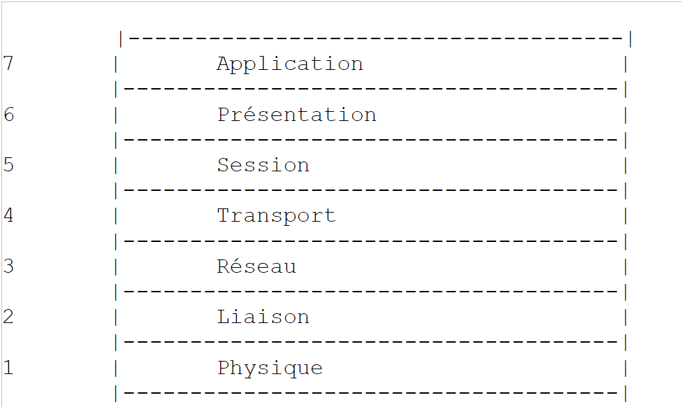
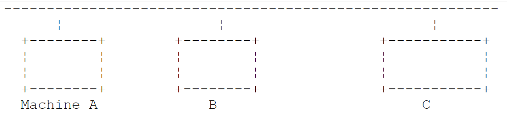
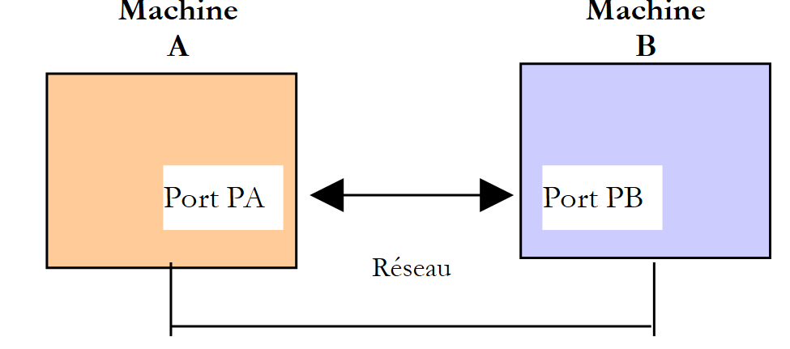
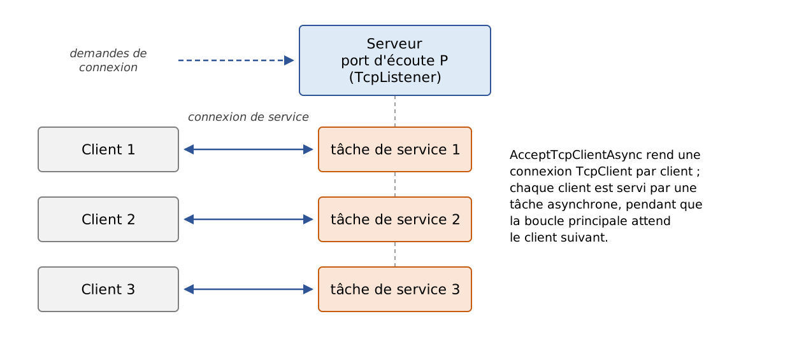
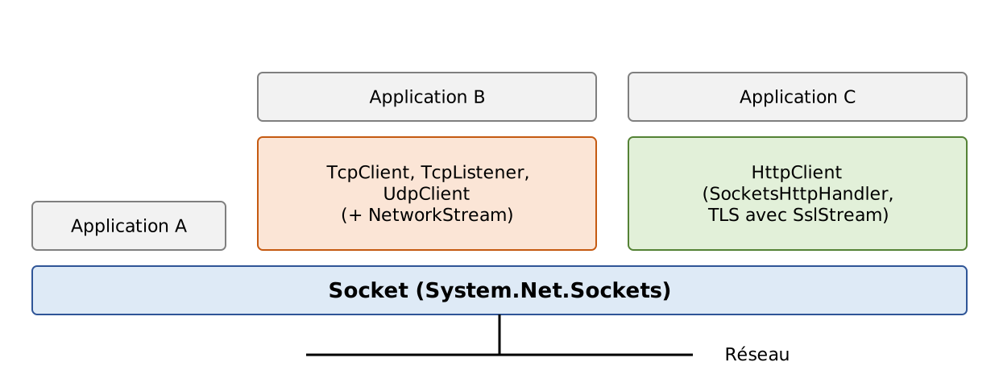
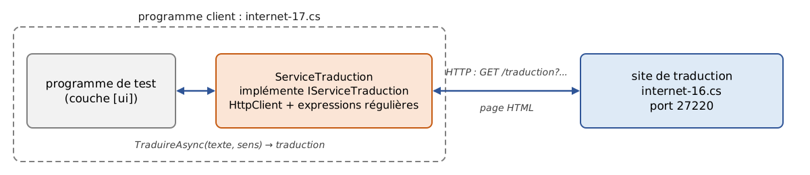
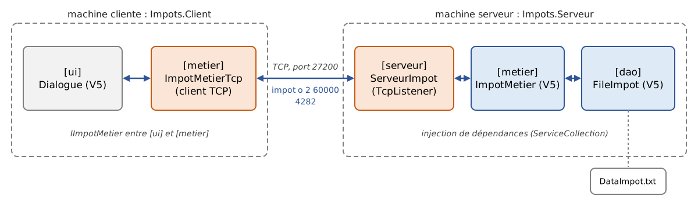

12. Web Programming
12.1. Overview
12.1.1. Internet Protocols
Here we provide an introduction to Internet communication protocols, also known as the TCP/IP protocol suite (Transmission Control Protocol / Internet Protocol), named after the two main protocols. It is helpful for the reader to have a general understanding of how networks work—and in particular of the TCP/IP protocols—before tackling the development of distributed applications. The 2008 course included a translated excerpt from Novell’s “Lan Workplace for DOS” administration guide (early 1990s). We have retained its structure and spirit but have updated it: the Internet of 2026 is no longer quite the same as that of 1990.
The general concept of creating a network of heterogeneous computers stems from research conducted by the DARPA (Defense Advanced Research Projects Agency) in the United States. The DARPA developed the suite of protocols known as TCP/IP, which enables heterogeneous machines to communicate with one another. These protocols were tested on a network called ARPAnet, a network that later became the Internet (ARPAnet adopted TCP/IP on January 1, 1983). The TCP/IP protocols define formats and rules for transmission and reception that are independent of the network architecture and the hardware used.
The network designed by DARPA and managed by the TCP/IP protocols is a packet-switched network. Such a network transmits information in small pieces called packets. Thus, if a computer transmits a large file, it will be broken down into small pieces that are sent over the network to be reassembled at the destination. TCP/IP defines the format of these packets, including, in particular:
- the packet’s source;
- its destination;
- its length;
- its type.
Internet protocols are described in public documents called RFC (Request for Comments), published by the IETF (Internet Engineering Task Force) and available on www.rfc-editor.org. We will cite some of these documents throughout this chapter.
12.1.2. The OSI Model
The TCP/IP protocols generally follow the open network model known as OSI (Open Systems Interconnection Reference Model) defined by the ISO (International Organization for Standardization). This model describes an ideal network in which communication between machines can be represented by a seven-layer model:

Each layer receives services from the layer below it and provides its own services to the layer above it. Suppose two applications located on different machines, A and B, want to communicate: they do so at the Application layer. They do not need to know all the details of how the network works: each application passes the information it wishes to transmit to the layer below it, the Presentation layer. The application therefore only needs to know the rules for interfacing with the Presentation layer. Once the information is in the Presentation layer, it is passed on according to other rules to the Session layer, and so on, until the information reaches the physical medium and is physically transmitted to the destination machine. There, it will undergo the reverse process of what it underwent on the sending machine.
At each layer, the sender process responsible for sending the information sends it to a receiver process on the other machine that belongs to the same layer. It does so according to certain rules known as the layer protocol. The actual communication travels down through the layers of Machine A, crosses the physical network, and then travels up through the layers of Machine B; however, each layer perceives that it is communicating directly with the corresponding layer on the other machine.
The roles of the different layers are as follows:
Layer | Role |
Physical | Ensures the transmission of bits over a physical medium (copper cable, fiber optic cable, radio waves). Key considerations at this level include the encoding of information into signals and the transmission method. |
Data Link | Abstracts the physical characteristics of the Physical Layer. Divides information into frames, detects (and sometimes corrects) transmission errors, and manages access to the shared medium. |
Network | Manages the path that information sent over the network must follow. This is called routing: determining the route that information must take to reach its destination. |
Transport | Enables communication between two applications, whereas the previous layers only allowed communication between machines. One service provided by this layer is multiplexing: the transport layer uses a single network link (from machine to machine) to transmit data belonging to multiple applications. |
Session | Provides services that allow an application to open and maintain a working session on a remote machine. |
Presentation | Standardizes the representation of data across different machines. Data from machine A is “formatted” by machine A’s Presentation layer according to a standard format before being sent over the network. Once it reaches the Presentation layer of the destination machine B—which recognizes it based on its standard format—the data is reformatted so that the application on machine B can recognize it. |
Application | At this level are applications that are generally close to the user, such as email, the Web, or file transfer. |
12.1.3. The TCP/IP Model
The OSI model is a reference model that was never implemented as is. The TCP/IP protocol suite, which has become the standard, is organized into only four layers:

The Session and Presentation layers do not exist as such in TCP/IP: their functions, when necessary, are handled by the applications themselves or by intermediate protocols such as TLS (encryption of data exchanges), which is inserted between TCP and the application.
The Network Access Layer
In local area networks, the dominant technology today is Ethernet for wired connections and Wi-Fi (IEEE 802.11 standards) for wireless connections. The 2008 course also covered Token Ring, a technology that is no longer in use today.
Ethernet is the name given to a packet-switched local area network technology invented at Xerox in the early 1970s and standardized by Xerox, Intel, and Digital Equipment in 1980, and later by the IEEE (Standard 802.3). The original Ethernet consisted of a coaxial cable to which all machines were connected (bus topology), with a data rate of 10 megabits per second:

This was a broadcast network: a transmitting machine would send information over the cable that included the address of the destination machine; all connected machines would receive it, and only the intended recipient would retain it. Since multiple machines could decide to transmit at the same time, collisions had to be detected: this was the Carrier Sense Multiple Access/Collision Detect (CSMA/CD) method. Each transmitter listened to the cable before transmitting (CSMA) and, while transmitting, verified that what was passing over the cable was indeed what it had transmitted; if not, a collision occurred (CD): each would stop transmitting and try again after a random delay.
Modern Ethernet has evolved significantly: devices are connected via twisted-pair cables or fiber-optic cables to a switch, which routes each frame to the recipient’s specific port. Connections are full-duplex (simultaneous transmission and reception): there are no longer any collisions, and CSMA/CD has become obsolete. Typical data rates range from 1 to 10 gigabits per second, and much higher in data centers.
What has not changed is 48-bit addressing: each network card has an address, called a physical address or MAC (Media Access Control) address, generally written as six hexadecimal bytes (for example, [00:1A:2B:3C:4D:5E]). It is embedded in the card by the manufacturer, but—contrary to what was stated in the 2008 course—it can be modified via software: current operating systems even use random MAC addresses on Wi-Fi networks to prevent a device from being tracked from network to network.
The Internet Layer (Network Layer)
The following protocols are found at this layer:
Protocol | Role |
IP (Internet Protocol) | delivers packets between two network nodes, in version 4 (IPv4) or 6 (IPv6) |
ICMP (Internet Control Message Protocol) | facilitates communication between the IP protocol program on one machine and that on another machine. It is therefore a protocol for exchanging control messages within the IP protocol itself |
ARP (Address Resolution Protocol) | maps a machine’s IP address to the machine’s physical address (in IPv6, this role is performed by the NDP protocol, the Neighbor Discovery Protocol) |
The 2008 course also mentioned RARP (Reverse Address Resolution Protocol), which performed the reverse mapping. It has long since been deprecated in favor of DHCP, which we will discuss later.
The Transport Layer
This layer includes the following protocols:
Protocol | Role |
TCP (Transmission Control Protocol) | ensures reliable and orderly delivery of information between two applications |
UDP (User Datagram Protocol) | ensures unreliable delivery of information between two applications |
The QUIC (2021) protocol, on which HTTP/3 is based, is a reliable, encrypted transport protocol built on top of UDP.
The Application Layer
Here we find various protocols, which we will detail a little further on:
Protocol | Role |
HTTP, HTTPS (HyperText Transfer Protocol) | The Web protocol: a client (browser, application) requests resources from a web server. HTTPS is HTTP encrypted using TLS |
DNS (Domain Name System) | converts a machine name into an address IP |
SMTP (Simple Mail Transfer Protocol) | enables the sending of emails |
POP3, IMAP | allow you to read email stored on a server |
SSH (Secure Shell) | allows you to connect to a remote machine and execute commands on it, using encryption. It replaced TELNET, which performed the same function without encryption |
FTP (File Transfer Protocol), SFTP | enable file transfers |
DHCP (Dynamic Host Configuration Protocol) | allows a machine to automatically obtain its IP address and network configuration |
12.1.4. How Internet Protocols Work
Applications developed in the TCP/IP environment generally use several of the protocols in this environment. An application program communicates with the highest layer of the protocols. This layer passes the information to the layer below it, and so on, until it reaches the physical medium. There, the information is physically transferred to the receiving machine, where it will pass through the same layers again—in reverse order this time—until it reaches the application that is the intended recipient of the sent information. The following diagram shows the path of the information:

Let’s take an example: an application that sends a file to another machine using TCP.
- The application delivers a sequence of bytes to be transmitted to the transport layer;
- the transport layer divides this sequence of bytes into segments TCP and adds a header to the beginning of each segment containing, among other things, the source and destination port numbers as well as a sequence number. The segments are passed to the network layer, which is governed by the IP protocol;
- The IP layer creates a packet encapsulating the received TCP segment. In the header of this packet, it places the IP addresses of the source and destination machines. It also determines the physical address of the machine to which the packet should be delivered (the destination machine itself or a router). The entire packet is passed to the Network Access layer, that is, to the network card that connects the machine to the physical network;
- there, the packet IP is in turn encapsulated in a physical frame and sent to its recipient over the medium;
- On the destination machine, the Network Access layer performs the reverse process: it decapsulates the IP packet from the physical frame and passes it to the IP layer;
- the IP layer verifies that the packet is valid: it calculates a checksum of its header, which it must find in the packet’s header. If this is not the case, the packet is discarded;
- if the packet is deemed valid, the IP layer decapsulates the TCP segment contained within it and passes it upward to the transport layer;
- the TCP layer also verifies a checksum for the segment. If it is correct, it sends an acknowledgment to the source machine; otherwise, the segment is ignored (and will be resent by the source);
- Using the sequence numbers, the TCP layer rearranges the segments into the correct order;
- all that remains for the TCP layer to do is transmit the data portion of the segments to the destination application, identified by the destination port number.
12.1.5. Addressing Issues on the Internet
A network node can be a computer, a printer, a phone, a connected device—anything, in fact, that can communicate using the TCP/IP protocols. Each node has a physical address whose format depends on the type of network. On an Ethernet or Wi-Fi network, the physical address is encoded using 6 bytes.
A node’s Internet address (IP) is a logical address: it is independent of the hardware and the network used. In IPv4, it is a 4-byte address that identifies both a network and a node on that network. It is usually represented as four numbers—the values of the four bytes—separated by a period. For example, in 2008, the address of the machine named “Lagaffe” at the Faculty of Sciences in Angers was 193.49.144.1, and that of the machine named “Liny” was 193.49.144.9. From this, it could be deduced that the local network address was 193.49.144.0 and that there could be up to 254 nodes on that network.
Because IP addresses are independent of the physical network, a computer on network A can communicate with a computer on network B without worrying about the type of network the latter is on: it simply needs to know its IP address. The IP protocol on each network handles the conversion between IP addresses and physical addresses, in both directions.
All public IP addresses must be unique. Their allocation follows a hierarchical structure: the IANA (Internet Assigned Numbers Authority) distributes address blocks to five regional registries, including the RIPE and NCC for Europe, which redistribute them to operators and large organizations. These entities then assign them to their customers. The administrator of a network that has received the block 193.49.144.0 through 193.49.144.255 can assign the addresses 193.49.144.1 through 193.49.144.254 as they see fit. The 2008 course indicated that in France, INRIA was responsible for assigning addresses; this has not been the case for a long time.
12.1.5.1. The address classes IP and the notation CIDR
An address such as IPv4 is a sequence of 4 bytes written as I1.I2.I3.I4, which actually contains two pieces of information:
- the network address (the most significant bits);
- the address of a node within that network (the least significant bits).
Originally, the size of these two fields was determined by the value of the first byte. IP addresses were divided into three main classes:
Class | First byte | Network / Node | Number of networks and nodes |
A | 1 to 126 (most significant bit 0) | R1.N1.N2.N3: 1-byte network (7 significant bits), 3-byte node | 126 networks of 2²⁴ - 2 nodes (approximately 16 million) |
B | 128 to 191 (most significant 10 bits) | R1.R2.N1.N2: 2-byte network (14 significant bits), 2-byte node | 2¹⁴ = 16,384 networks of 2¹⁶ - 2 = 65,534 nodes |
C | 192 to 223 (110 most significant bits) | R1.R2.R3.N1: 3-byte network (21 significant bits), 1-byte node | 2²¹ networks (approximately 2 million) with 254 nodes |
Since the address of the Lagaffe machine is 193.49.144.1, the most significant byte is 193, which is 11000001 in binary: the network was a Class C network.
This classification proved to be far too rigid: an organization with 300 machines was required to use a Class B network, wasting more than 65,000 addresses. Since 1993 (RFC 1518 and 1519), the classes have been abandoned in favor of classless routing (CIDR, Classless Inter-Domain Routing). The boundary between the network portion and the host portion can be set at any bit; it is indicated by the length of the network prefix, following a slash:
- 193.49.144.0/24: the first 24 bits designate the network, and the last 8 bits designate the node. This network contains the addresses 193.49.144.0 through 193.49.144.255;
- 10.0.0.0/8: a network with 2²⁴ addresses;
- 192.168.1.0/26: a network of 2⁶ = 64 addresses, ranging from 192.168.1.0 to 192.168.1.63.
The old notation for the subnet mask is still used, which expresses the same thing: the /24 prefix corresponds to the mask 255.255.255.0. The terms “Class A, B, C” remain in common usage, but no longer correspond to any actual mechanism.
12.1.5.2. Reserved Addresses, Private Addresses, and NAT
Certain addresses serve a specific purpose:
- an address whose host part consists entirely of 0s refers to the network itself: 193.49.144.0 is the address of the 193.49.144.0/24 network;
- an address whose host portion consists entirely of 1s is a broadcast address: 193.49.144.255 refers to all hosts on the 193.49.144.0/24 network. These two addresses therefore cannot be assigned to a node: a /24 network with 256 addresses offers only 254 usable addresses;
- the addresses 127.0.0.0/8, and in practice 127.0.0.1, are loopback addresses: a machine uses them to refer to itself without going through the network. The name [localhost] is associated with them;
- the blocks 10.0.0.0/8, 172.16.0.0/12, and 192.168.0.0/16 (RFC 1918) are reserved for private networks: they can be used freely within a company or a home, but are not routed on the Internet;
- the blocks 192.0.2.0/24, 198.51.100.0/24, and 203.0.113.0/24 (RFC 5737) are reserved for documentation and examples.
The number of IPv4 addresses (2³², or just over 4 billion) is insufficient for all connected machines. The central pool of IANA addresses was exhausted in 2011, and those of RIPE and NCC in 2019. The shortage was circumvented by Network Address Translation (NAT): devices in a home have private addresses (such as 192.168.1.x), and the router connecting them to the Internet “translates” them to its own unique public address. The long-term solution is IPv6.
12.1.5.3. IPv6 addresses
IPv6 (RFC 2,460 in 1998, now RFC 8,200) encode addresses using 128 bits, providing 2¹²⁸ possible addresses—approximately 3.4 × 10³⁸—so there is no longer any need to worry about a shortage. An address such as IPv6 is written as eight groups of four hexadecimal digits separated by colons:
Leading zeros in each group may be omitted, and a single sequence of zero groups may be replaced with [::]. The previous address is therefore written as [2001:db8::8a2e:0:370:7334]. The loopback address, equivalent to 127.0.0.1, is [::1]. In a URL, an address IPv6 is placed in square brackets to avoid confusing its colon with the one preceding the port: [http://[::1]:8080/].
IPv6 introduces further simplifications: the packet header is fixed-length, automatic address configuration is built in by default, and NAT address translation is no longer necessary. Its adoption has been slow, but a significant and growing portion of Internet traffic now passes through IPv6 (Google, for example, publishes the proportion of its users who access it via IPv6), and the major French ISPs provide it to their subscribers. Both versions coexist: most machines have both IPv4 and IPv6 addresses (this is referred to as a “dual stack”), and programs must be able to handle both.
12.1.5.4. Protocols for converting between IP addresses and physical addresses
We have seen that when data is transmitted from one machine to another, as it passes through the IP layer, it is encapsulated in packets. These packets have the following form:

The IP packet therefore contains the IP addresses of the source and destination machines. When this packet is transmitted to the layer responsible for sending it over the physical network, additional information is added to form the physical frame that will ultimately be sent over the network. For example, the format of a frame on an Ethernet network is as follows:

The first 8 bytes (preamble) are used for synchronization; the 2-byte field preceding the data indicates, in the most common form of the Ethernet frame, the type of protocol being carried (IPv4, IPv6, ARP…) rather than the packet length. In the final frame, there are the physical addresses of the source and destination machines (in the actual frame, the destination address precedes the source address, unlike the order shown in the diagram). How are they obtained?
The sending machine, knowing the address IP of the machine it wants to communicate with, obtains that machine’s physical address using the ARP protocol (Address Resolution Protocol):
- it sends a special type of packet, called a ARP packet, containing the address IP of the machine whose physical address is being sought. It also includes its own address, IP, as well as its physical address;
- this packet is sent to all nodes on the local network (broadcast);
- these nodes recognize the special nature of the packet. The node that recognizes its address, IP, in the packet responds by sending its physical address to the sender. It can do this because it found the sender’s address, IP, and physical address in the packet;
- The sender therefore receives the physical address it was looking for. It stores it in a cache so it can use it later if other packets need to be sent to the same recipient.
In IPv6, the same service is provided by the NDP protocol (Neighbor Discovery Protocol), which relies on ICMPv6 messages.
The question remains: how does a machine know its own IP address? It can be specified in a configuration file on the machine—this is still the standard practice for servers. However, when an administrator needs to reorganize the network, modifying the configuration files of every machine one by one is tedious and prone to errors. The 2008 course introduced the RARP protocol, through which a machine requested its address IP from a server based on its physical address. It has been replaced by DHCP (Dynamic Host Configuration Protocol, RFC 2131): upon startup, the machine broadcasts a request over the network; a server (such as a home router or a dedicated server in a business) assigns it an address for a limited time (a lease), along with the rest of its configuration: network prefix, router address, and DNS server addresses. The administrator then simply needs to configure the DHCP server. In IPv6, a device can also construct its own address based on the prefix announced by the router (SLAAC autoconfiguration).
12.1.6. The network layer, known as the IP layer, of the Internet
The IP protocol defines the format that packets must take and how they must be handled when sent or received. This particular type of packet is called a IP datagram. We have already discussed it:
The important point is that, in addition to the data to be transmitted, the IP datagram contains the IP addresses of the source and destination machines. This way, the destination machine knows who is sending it a message.
Unlike a network frame, whose length is determined by the physical characteristics of the network over which it travels, the length of the datagram IP is set by the software and will therefore be the same across different physical networks. We have seen that as we move down from the network layer to the physical layer, the IP datagram is encapsulated in a physical frame.
Physical frames travel from node to node toward their destination, which may not be on the same physical network as the sending machine. The packet IP may therefore be successively encapsulated in different physical frames at the nodes that connect two networks of different types. It is also possible that the packet IP is too large to be encapsulated in a physical frame (the payload of an Ethernet frame is limited to 1,500 bytes). In IPv4, the node where this problem occurs then splits the IP packet into fragments, which will only be reassembled at their final destination. In IPv6, routers no longer fragment packets: it is up to the sender to determine the maximum size accepted along the path and adjust the size of its packets accordingly.
12.1.6.1. Routing
Routing is the method of directing IP packets to their destination. There are two methods: direct routing and indirect routing.
Direct Routing
Direct routing refers to the transmission of a IP packet directly from the sender to the recipient within the same network:
- the machine sending a IP datagram has the recipient’s address, IP;
- it obtains the recipient’s physical address via the ARP protocol, or from its cache if that address has already been obtained;
- it sends the packet over the network to that physical address.
Indirect Routing
Indirect routing refers to the transmission of a packet IP to a destination located on a network other than the one to which the sender belongs. In this case, the “network” portions of the IP addresses of the source and destination machines are different; the source machine detects this by comparing the destination address to its own network prefix. It then sends the packet to a special node called a router, which connects the local network to other networks and whose address IP is known to the source machine (this is called the default gateway; which is usually provided by DHCP). A router is connected to at least two networks and has a IP address in each of them:

In our example above:
- Network No. 1 has the address 193.49.144.0/24 and Network No. 2 has the address 193.49.145.0/24;
- within network #1, the router has the address 193.49.144.6, and within network #2, it has the address 193.49.145.3.
The router’s role is to take the packet IP that it receives—contained in a physical frame from network #1—and place it into a physical frame that can travel over network #2. If the packet’s destination address, IP, is on network #2, the router will send the packet directly to it; otherwise, it will send it to another router connecting network #2 to network #3, and so on. Internet routers constantly exchange information about the networks they can reach (routing protocols such as BGP between operators) to build their routing tables.
12.1.6.2. Error and Control Messages
Also in the network layer—and thus at the same level as the IP protocol—is the ICMP protocol (Internet Control Message Protocol). It is used to send messages about the internal operation of the network: unreachable node, packet having traversed too many routers, etc. ICMP messages are encapsulated in IP packets and sent over the network. The IP layers of the various nodes take the appropriate actions based on the ICMP messages they receive. Thus, an application itself never sees these network-specific issues. The [ping] commands (which send ICMP “Echo Request” messages and wait for “Echo Reply” messages) and the [traceroute] / [tracert] (which displays the routers traversed) are based on ICMP.
12.1.7. The transport layer: the UDP and TCP protocols
12.1.7.1. The UDP protocol: User Datagram Protocol
The UDP protocol enables an unreliable exchange of data between two points; that is, the successful delivery of a packet to its destination is not guaranteed, nor is the order in which packets arrive. The application, if it chooses, can handle this itself—for example, by waiting for an acknowledgment after sending a message before sending the next one.
So far, at the network level, we have discussed the IP addresses of machines. However, on a single machine, different processes can coexist simultaneously, and all of them can communicate with one another. Therefore, when sending a message, you must specify not only the IP address of the destination machine, but also the “name” of the destination process. This name is actually a 16-bit number (from 1 to 65,535), called a port number. Certain numbers are reserved for standard applications: port 53 for DNS, 80 for HTTP, 443 for HTTPS, 25 for SMTP, and so on. Ports below 1024 are called “well-known”; under Linux, special privileges are required to open a service on one of them. The examples in this chapter use ports from the ranges 27100–27199 and 27200–27299.
Packets handled by the UDP protocol are called datagrams. They have the following form:

These datagrams are encapsulated in IP packets, and then in physical frames. UDP is used when speed is more important than reliability, or when the application handles packet loss itself: DNS (one question, one answer), live audio and video streaming, online gaming, and the QUIC protocol from HTTP/3.
12.1.7.2. The TCP protocol: Transmission Control Protocol
For secure communications, the UDP protocol is insufficient: the application developer must create a protocol themselves to ensure that packets are routed correctly. The TCP protocol avoids these issues. Its characteristics are as follows:
- The process that wishes to transmit data first establishes a connection with the process that will receive the information it is about to transmit. This connection is established between a port on the sending machine and a port on the receiving machine through an exchange of three segments (SYN, SYN-ACK, ACK: the “three-step handshake”). A virtual circuit is thus created between the two ports and will be reserved exclusively for the two processes that established the connection;
- all bytes transmitted by the source process arrive at their destination in the order in which they were transmitted, which is not guaranteed by the UDP protocol since packets may follow different paths;
- The transmitted information is continuous: it is a stream of bytes. The transmitting process sends information at its own pace. This information is not necessarily sent immediately: the TCP protocol may wait until it has enough data to send. The data is placed into a structure called a TCP segment. Once this segment is filled, it is transmitted to the IP layer, where it is encapsulated into a IP packet. An important implication for the programmer: a “line” sent all at once may arrive in several pieces, and several lines may arrive together. It is up to the application to identify the boundaries of its messages (we will use the end-of-line character for this);
- Each segment sent by the TCP protocol is numbered. The receiving TCP protocol verifies that it is receiving the segments in sequence. For each segment received correctly, it sends an acknowledgment to the sender;
- if, after a certain amount of time, the TCP protocol that sent a segment does not receive an acknowledgment, it retransmits the segment in question, thereby ensuring the quality of the information delivery service;
- The virtual circuit established between the two communicating processes is full-duplex: information can travel in both directions simultaneously. Thus, the destination process can send acknowledgments even while the source process continues to send information. This allows, for example, the source TCP protocol to send multiple segments without waiting for acknowledgments. If, after a certain amount of time, it realizes it has not received an acknowledgment for a specific segment No. n, it will resume transmitting segments from that point;
- TCP also regulates its data rate to avoid overloading the recipient (flow control) or the network (congestion control).
12.1.8. The Application Layer
Above the UDP and TCP protocols are various standard protocols:
TELNET and SSH
TELNET allows a user on machine A to connect to machine B (often called the host machine) as if they had a terminal connected to that machine. TELNET is based on TCP. Its data exchanges, including passwords, are transmitted in plain text: it has been replaced by SSH (Secure Shell), which provides the same service in an encrypted manner and is also used for secure file transfer (SFTP, SCP) and for creating tunnels. As of 2008, the [telnet] client program remained a convenient tool for “manually” communicating with a TCP server: we’ll see how to replace it.
FTP (File Transfer Protocol)
This protocol enables the exchange of files between two remote machines as well as file operations such as creating directories. It is based on the TCP protocol. Like TELNET, it transmits passwords in plain text; it is being phased out in favor of SFTP and HTTPS.
TFTP (Trivial File Transfer Protocol)
This protocol is a simplified variant of FTP. It is based on the UDP protocol. It is still used to boot machines over the network.
DNS (Domain Name System)
When a user wants to exchange information with a remote machine, they must know that machine’s IP address. It is much more convenient to refer to a machine by a name than by its IP address. This raises the issue of name uniqueness: there are billions of interconnected machines. One might imagine a centralized authority assigning the names, but that would be very cumbersome. Control over names has been distributed across domains. Each domain is managed by an organization that has complete freedom to choose names within its domain. Thus, machines in France often belong to the domain [fr], managed by AFNIC (INRIA managed it until the creation of AFNIC in 1997). To further simplify matters, control is distributed even further: domains are created within the [fr] domain. For example, the University of Angers owns the [univ-angers.fr] domain; the department that manages it has complete freedom to name the computers on the university’s network and to create subdomains.
A machine’s full name (FQDN, Fully Qualified Domain Name) specifies the hierarchy of domains to which it belongs, from the most specific to the most general: [www.univ-angers.fr]. Within a domain, relative names can often be used, which are automatically completed by the system.
An application can therefore refer to a machine by its name. Ultimately, however, you still need to obtain the address IP for that machine. Suppose you want to communicate from machine A to machine B:
- Machine A first checks a local mapping file ([/etc/hosts] on Linux and macOS, [C:\Windows\System32\drivers\etc\hosts] on Windows), then its cache;
- otherwise, it queries the server DNS, whose address is listed in its configuration (usually provided by DHCP). It sends a DNS request containing the name of the machine being sought. If the queried server knows the answer or has it cached, it returns the corresponding IP address to machine A. Otherwise, it in turn queries—starting from the root servers—the servers responsible for the domain [fr], then [univ-angers.fr], and so on, until it obtains the answer, which will then be relayed back down to machine A.
The DNS domain associates various types of records with a name: A (address IPv4), AAAA (address IPv6), CNAME (alias to another name), MX (domain mail servers), etc.
HTTP and HTTPS (HyperText Transfer Protocol)
This is the Web protocol, and by far the most widely used today: not only by browsers, but also by applications that exchange data (the web services discussed in the next chapter). We will examine it in detail. HTTPS is HTTP transmitted over a connection encrypted by TLS (Transport Layer Security); this is now the standard form of the Web.
SMTP, POP3, and IMAP
SMTP is used to send emails, while POP3 and IMAP are used to read emails stored on a server. We will also discuss these.
XDR, RPC, NFS
The 2008 course also covered three protocols defined by Sun Microsystems: XDR (eXternal Data Representation), which specifies a standard, machine-independent data representation; RPC (Remote Procedure Call), a remote procedure call protocol based on XDR; NFS (Network File System), which allows one machine to “see” another machine’s file system and is based on RPC. NFS remains in use in the Unix world. The concept of remote procedure calls has been adopted by numerous successors; today, these include the web services REST (based on HTTP) and gRPC (based on HTTP/2).
12.1.9. Conclusion
In this introduction, we have presented some of the main features of Internet protocols. To explore this field in greater depth, readers may consult Douglas Comer’s seminal work, *Internetworking with TCP/IP, Volume 1 ” (Pearson, 6th edition)—previous editions of which have been translated into French—as well as the RFC cited in this chapter. For HTTP, the Mozilla documentation at developer.mozilla.org/fr/docs/Web/HTTP is an excellent introduction.
12.2. The .NET classes for IP address management
A machine on the Internet is identified by a IP address, which can take two forms:
- IPv4: encoded on 32 bits and represented by a string of the form "I1.I2.I3.I4," where In is a number between 0 and 255;
- IPv6: encoded as 128 bits and represented by a string of eight groups of hexadecimal digits separated by colons, such as "2001:db8::8a2e:370:7334". The 2008 course announced that it would not use IPv6 addresses; this is no longer possible today: our programs will accept them.
A machine can also be identified by a name. This name is not required, as applications ultimately always use the machines' IP addresses. Names are there to make life easier for users: it is easier to ask a browser for theURL and [https://learn.microsoft.com] than the URL formed from one of the IP addresses on this site, which, incidentally, changes depending on where the request is made from.
A machine may have multiple IP addresses: a loopback address, one address per network to which it is connected, and IPv4 and IPv6 addresses.
A IP address can be represented in two ways in .NET:
- as a string "I1.I2.I3.I4" or "2001:db8::1";
- as an object of type [IPAddress] (namespace [System.Net]).
The IPAddress class
Among the methods M, properties P, and static fields F of the class [IPAddress] are the following:
Member | Type | Role |
AddressFamily AddressFamily | P | family of the address IP. The type [AddressFamily] (namespace [System.Net.Sockets]) is an enumeration whose two current values are [AddressFamily.InterNetwork] (IPv4) and [AddressFamily.InterNetworkV6] (IPv6) |
static IPAddress Any | F | the address IPv4 0.0.0.0. When a service is associated with this address, it accepts clients on all IPv4 addresses on the machine |
static IPAddress Loopback | F | the loopback address 127.0.0.1. A service associated with this address accepts only clients located on the same machine as itself |
static IPAddress Broadcast | F | the broadcast address 255.255.255.255 ([IPAddress.None] has the same value) |
static IPAddress IPv6Any, IPv6Loopback | F | the equivalents of IPv6 for [Any] (::) and [Loopback] (::1) |
static IPAddress Parse(string string) | M | converts a IPv4 or IPv6 string into a [IPAddress] object; throws a [FormatException] if the string is not a IP address |
static bool TryParse(string string, out IPAddress address) | M | Same as above, but returns [false] instead of throwing an exception |
static bool IsLoopback(IPAddress address) | M | returns [true] if the address is a loopback address (127.x.y.z or ::1) |
byte[] GetAddressBytes() | M | returns the bytes at the address (4 in IPv4, 16 in IPv6) |
string ToString() | M | returns the address in its standard textual form |
Two other types complement [IPAddress]:
- [IPEndPoint] represents a connection point: a IP address and a port number. Its properties [Address] and [Port] provide these two pieces of information; the static method [IPEndPoint.Parse] parses a string such as "127.0.0.1:27100" or "[::1]:27100";
- [IPNetwork] (since .NET 8) represents a network in CIDR notation, such as 193.49.144.0/24. Its method [Contains] determines whether an address belongs to the network.
The program [internet-01.cs] illustrates these three types:
Results:
Comments:
- line 7: a collection expression initializes the array of strings to be parsed;
- Line 12: [TryParse] returns [true] if the string is an address IPv4 or IPv6, and then assigns theresulting object [IPAddress] into the variable [adresse]. The nullable type [IPAddress?] indicates that this variable is set to [null] when the analysis fails;
- line 14: the property [AddressFamily] distinguishes between the two versions of IP;
- line 15: [GetAddressBytes] returns the bytes of the address, which [Convert.ToHexString] displays in hexadecimal. We can see (line 2 of the results) that 193.49.144.1 consists of the four bytes C1, 31, 90, 01, and (line 5) that ::1 consists of 15 zero bytes followed by a byte with a value of 1;
- Line 4 of the results: a surprise. The string "192.168.1" was accepted and converted to 192.168.0.1. [TryParse] does indeed accept the historical abbreviated forms of IPv4 addresses (in which case the last number occupies all the remaining bytes). To verify that an entry is a complete IPv4 address, you must therefore also check that it contains four numbers;
- line 6}: The address IPv6 is redisplayed in its standardized compact form. The prefix 2001:db8::/32 is, like 192.0.2.0/24 in IPv4, reserved for documentation;
- lines 27–31: [IPAddress.Parse] generates a [FormatException] for the string “256.1.1.1” (256 does not fit into a single byte). As throughout the course, the exception message is in English (.NET does not provide a French translation);
- line 41: a [IPEndPoint] object associates an address and a port. Its display (line 12 of the results) is in the form address:port; in IPv6 (line 13), the address is enclosed in square brackets;
- line 47: a network in CIDR notation. Lines 14–15 of the results show that 193.49.144.1 belongs to the 193.49.144.0/24 network and that 193.49.145.3 (the address of the router in our diagram, on its second network) does not belong to it. This is exactly the test a machine performs to choose between direct and indirect routing.
The Dns class
The mapping between the address IP and the hostname is handled by DNS. The static methods of the [Dns] class (namespace [System.Net]) allow you to query it:
Method | Role |
Task<IPHostEntry> GetHostEntryAsync(string nomOuAdresse) | Returns a [IPHostEntry] object from a machine name or a IP address in the form of a string. Throws a [SocketException] if the machine cannot be found |
Task<IPHostEntry> GetHostEntryAsync(IPAddress address) | Same as above, but from a [IPAddress] object |
Task<IPAddress[]> GetHostAddressesAsync(string nomOuAdresse) | returns only the IP addresses on the machine |
string GetHostName() | returns the name of the machine on which the program is running |
Each of these asynchronous methods has a synchronous version ([GetHostEntry], [GetHostAddresses]), which was used in the 2008 course. A DNS request can take several tens of milliseconds, or even several seconds if a server does not respond: as we saw in the chapter on asynchronous programming, it is best not to block a thread while waiting.
A [IPHostEntry] object encapsulates IP addresses, aliases, and a machine name:
Property | Type | Role |
IPAddress[] AddressList | P | IP address table for the machine |
string[] Aliases | P | other names for the machine known to the system (often empty) |
string HostName | P | the machine's primary name |
The program [internet-02.cs] displays the name of the machine on which it is running, then interactively lists the mappings between the machine name and addresses for IP:
Results:
Comments:
- line 9: the name of the local machine. Our test machine is a Linux virtual machine named [vm]; for the reader, this will of course be the name of their own computer;
- line 25: the asynchronous query of DNS. If the name (or address) is unknown, a [SocketException] is launched; its property [SocketErrorCode] (line 39) provides the nature of the error in the form of an enumeration, which is easier to test than the message;
- Line 29: The machine's addresses IP are combined into a single string by [string.Join], after being converted into strings by [Select] (LINQ).
The results warrant a few comments. They depend on the machine’s configuration: do not expect to get exactly the same results on your own system.
- Line 4: The name [localhost] corresponds to the loopback address 127.0.0.1. On a machine where IPv6 is active, you would also get ::1;
- Line 8: The machine’s name corresponds to two addresses: the loopback address and the address of its network interface. On a Windows machine with the name PC connected to a router, you would typically get a private address in the form 192.168.x.y and one or more IPv6 addresses;
- line 9: given an address IP, [GetHostEntryAsync] performs a “reverse” lookup and returns the name associated with the address;
- line 13: the reverse lookup for ::1 failed because the file [/etc/hosts] on our test machine does not associate any name with this address, and no IPv6 interface is active there. On Windows, the machine name would be returned;
- line 15: the name [xx] is unknown. The exception message here comes from the Linux system library; it would be different on Windows, but [SocketErrorCode] is equivalent to [HostNotFound] in both cases.
On a machine connected to the Internet, you can also query a public name such as [learn.microsoft.com]. In general, this returns a primary name different from the requested name (the site is served by a content delivery network, and the requested name is an alias for DNS) along with addresses that vary depending on the location and time of the request. We do not reproduce this result, as our test machine does not have Internet access.
12.3. The Basics of Web Programming
12.3.1. General Overview
Consider communication between two remote machines, A and B:

When an application AppA on machine A wants to communicate with an application AppB on machine B on the Internet, it must know several things:
- the address IP or the name of machine B;
- the port number used by the AppB application. This is because machine B may host many applications that operate on the Internet. When it receives information from the network, it must know which application the information is intended for. The applications on machine B access the network through interfaces called communication ports. The destination port number is contained in the segment received by machine B so that it can be delivered to the correct application;
- the communication protocols understood by machine B. In our study, we will use only the TCP/IP protocols;
- the communication protocol supported by the AppB application. In fact, machines A and B will “communicate” with each other. What they say will be encapsulated in the TCP/IP protocols. However, when the application AppB at the end of the chain receives the information sent by the application AppA, it must be able to interpret it. This is analogous to a situation where two people, A and B, are communicating by phone: their conversation is carried over the phone, but if A speaks French and B does not understand that language, A and B will not be able to have a meaningful conversation. The two communicating applications must therefore agree on the type of communication they will use. For example, communication with a web server is not the same as communication with a mail server: these two services do not accept the same commands. They have different communication protocols.
12.3.2. Characteristics of the TCP Protocol
Here, we will focus only on network communications using the TCP transport protocol. Let’s review its key characteristics for programmers:
- A connection is first established between a port on the client machine and a port on the server machine. It is identified by four pieces of information: the client’s IP address and port, and the server’s IP address and port;
- the connection carries two streams of bytes, one in each direction (full-duplex). The bytes arrive in the order in which they were transmitted, without loss or duplication;
- TCP does not recognize the concept of a message: it is up to the application’s communication protocol to delimit requests and responses (via a line break, a specified length, closing the connection, etc.);
- One of the two parties closes the connection; the other detects this when it reaches the end of the read stream.
12.3.3. The Client-Server Relationship
Communication over the Internet is often asymmetric: Machine A initiates a connection to request a service from Machine B. It specifies that it wants to establish a connection with Machine B’s SB1 service. Machine B either accepts or rejects the request. If it accepts, machine A can send its requests to service SB1. These requests must comply with the communication protocol understood by service SB1. A request-response dialogue is thus established between machine A, known as the client machine, and machine B, known as the server machine. One of the two partners will close the connection.
12.3.4. Client Architecture
The architecture of a network program requesting the services of a server application will be as follows:
12.3.5. Server Architecture
The architecture of a program offering services will be as follows:
The server program handles a client’s initial connection request differently from its subsequent requests for service. The listening program does not provide the service itself: if it did, it would no longer be listening for connection requests while the service was in progress, and other clients would not be served. It therefore proceeds differently: as soon as a connection request is received on the listening port and then accepted, the server creates a task responsible for providing the service requested by the client over the service connection that has just been established. This makes it possible to serve multiple clients at the same time:

The 2008 course stated that the service connection used a different, randomly chosen port on the server side. This is incorrect: all service connections use the server’s listening port; they are distinguished from one another by the client’s address and port, which are different. We will see this in the output from our echo server.
A service task will have the following structure:
12.4. Exploring Internet Communication Protocols
12.4.1. Introduction
When a client connects to a server, a dialogue is established between them. The nature of this dialogue constitutes what is known as the server’s communication protocol. Among the most common Internet protocols are the following:
- HTTP: HyperText Transfer Protocol, the protocol for communicating with a web server (HTTP server);
- SMTP: Simple Mail Transfer Protocol, the protocol for communicating with an email sending server (server SMTP);
- POP: Post Office Protocol, the protocol for communicating with an email storage server (server POP). This is used to retrieve received emails, not to send them. IMAP serves the same purpose;
- FTP: File Transfer Protocol, the protocol for communicating with a file storage server (server FTP).
These protocols, in their historical versions, are characterized by being text-based: the client and server exchange lines of text terminated by the two characters \r\n (carriage return, line feed). If you have a client capable of:
- establish a connection with a TCP server;
- display the text lines sent by the server on the console;
- send the text lines that a user types on the keyboard to the server,
then we can communicate with a TCP server using a text-based protocol, provided we know the rules of that protocol.
The program [telnet], which used to be available on Unix and Windows machines, is such a client; the 2008 course used the tool PuTTY, configured in raw connection mode. The [telnet] client is no longer installed by default on Windows, and most public servers no longer accept unencrypted communication. We will proceed differently:
- for HTTP, we will use the [curl] tool, available by default on Windows 10 and 11, as well as on Linux, which displays the details of the exchanges, followed by the generic TCP client that we will write later in this chapter. On Windows, PowerShell and [curl] are aliases for the command [Invoke-WebRequest]: you must type [curl.exe];
- since we do not have access to real servers, we will query a small web server that we are writing ourselves and that runs on the local machine;
- For SMTP, POP, and FTP, we will present sample dialogs that conform to RFC, which defines these protocols.
12.4.2. A Test Web Server
Our test web server is a single-file ASP.NET Core application called “Minimal API.” ASP.NET Core is the .NET web development framework; which we’ll explore in the next chapter. It’s not necessary to understand this program in detail for now—it’s enough to know what it outputs. The [internet-03.cs] program is as follows:
Comments:
- Line 1: This directive specifies that the single-file application uses the SDK web version of ASP.NET Core ([Microsoft.NET.Sdk.Web]) instead of the usual SDK console version. The namespaces of ASP.NET Core ([Microsoft.AspNetCore.Builder], [Microsoft.AspNetCore.Http]…) are then part of the default [using];
- line 5: the listening port, 27110 by default;
- lines 13–18: Each processed request is displayed on the console along with the response status code;
- line 25: the URL [/] returns a small document HTML. The document’s text is written using a raw string literal [""" ... """] (C# 11), which avoids the need to escape the quotation marks;
- line 35: the URL [/bonjour?nom=xx] renders the text [Bonjour xx !]. The [nom] parameter of the lambda is automatically populated with the [nom] parameter of the URL;
- line 38: URL [/ancienne] causes a temporary redirect (status code 302) to the relative address [/bonjour?nom=visiteur];
- line 41: URL [/deplacee] causes a permanent redirect (status code 301) to the absolute address [http://localhost:27110/];
- line 44: URL [/boucle] redirects to itself: a client that blindly follows the redirects would never stop;
- any other URL receives a 404 response (page not found);
- line 48: the server listens on the loopback address 127.0.0.1: it is accessible only from the machine itself.
The server is launched in a command window. It displays:
Lines 3–4 appeared during the tests described in the following paragraph. The server is stopped by pressing Ctrl-C.
12.4.3. The HTTP protocol (HyperText Transfer Protocol)
While the server is running, we request, in a second command window, the root [/] of the site [http://localhost:27110] using the tool [curl]. Its [-v] (verbose) option displays the entire HTTP dialog:
Comments:
- Lines beginning with [*] contain information from [curl]; lines beginning with [>] were sent to the server; those beginning with [<] were received from the server; the others make up the received document;
- Lines 2–6: [curl] obtained the addresses of [localhost] (::1 for IPv6 and 127.0.0.1 for IPv4) and connected to port 27110 on the address 127.0.0.1;
- lines 7–10: the client’s request. It consists of a first line in [méthode URL version] syntax (here, the [GET] method is used to request the document [/], that is, the site’s root, at HTTP/1.1), followed by HTTP headers in the form [Nom: valeur], and ends with a blank line;
- line 8: the [Host] header specifies the machine and port being queried; it is required in HTTP/1.1 because a single server may host multiple sites;
- line 9: the client software identifier;
- line 10: the document types accepted by the client—in this case, all;
- Lines 12–16: the response headers, also ending with a blank line;
- line 12: the status line, with the syntax [version code message]. The code 200 indicates that the requested document was found;
- line 13: the document size in bytes. This tells the client where the document ends;
- line 14: the document type (a HTML document) and its encoding (UTF-8);
- line 15: the server’s date and time, always in Coordinated Universal Time (GMT);
- line 16: the software providing the web service, in this case Kestrel, the ASP.NET Core web server. In the 2008 course, it was an Apache 1.3 server with PHP 4;
- lines 18–22: the document sent by the server;
- line 23: in HTTP/1.1, the connection remains open by default after the response (“keep-alive” mode) so that other requests can be served; [curl] leaves it open and then closes it when it terminates.
Now let’s request a document that doesn’t exist:
- line 7: we requested a nonexistent document;
- line 12: the server responded with a 404 status code, meaning the requested document was not found;
- line 13: the document sent is empty. By default, Kestrel does not attach any document to a 404 response; the Apache server queried in 2008 sent a short explanatory page HTML. A browser that receives a 404 response without a document displays its own error page.
Status codes are divided into five categories: 1xx (information), 2xx (success, 200 OK), 3xx (redirect, 301 and 302, which we’ll cover later), 4xx (client error: 404 Not Found, 401 Unauthorized, 403 Forbidden…), 5xx (server error: 500 Internal Server Error…).
The browser does the same thing as [curl]: it sends a request HTTP, receives the headers and the document, and then displays the document. Browser developer tools (F12 key, Network tab) allow you to view the exchanged headers.
A few notes on the current state of HTTP:
- HTTPS is now the standard: browsers flag a site using plain HTTP as “not secure.” With HTTPS, a TLS negotiation precedes the HTTP dialogue, and everything that follows is encrypted. It is therefore no longer possible to communicate “manually” with a HTTPS server using a simple TCP client. However, you can still observe the dialogue with [curl], which performs the TLS handshake and then displays the headers in plain text. For illustrative purposes only (we are not reproducing the result, as our test machine does not have Internet access), the command would be [curl -v https://learn.microsoft.com/];
- HTTP/1.1 (RFC 9112 today) is a text-based protocol, the one we are studying. HTTP/2 (2015, now RFC 9113) retains the same methods, headers, and status codes, but transmits them in a compressed binary format and sends multiple requests simultaneously over a single TCP connection. HTTP/3 (2022, RFC 9114) does the same thing as QUIC, and thus as UDP. Browsers and servers automatically choose the most recent version they have in common; [curl], without any specific options, uses HTTP/1.1 for a URL [http://].
12.4.4. The SMTP protocol (Simple Mail Transfer Protocol)
SMTP servers exchange email with each other on port 25. An email client that sends a message submits it to its provider’s SMTP server on port 587 (submission, with a switch to encrypted mode via the [STARTTLS] command) or 465 (encrypted connection from the start), after authenticating. Internet service providers generally block outgoing connections to port 25 from their subscribers’ routers to limit spam sent by infected machines: the unencrypted dialog shown in the 2008 course is no longer feasible from a personal computer.
Here, by way of illustration, is a typical SMTP dialog consistent with RFC 5321. This is not an actual execution: lines prefixed with [C:] are sent by the client, those prefixed with [S:] by the server, and the domains [example.org] and [example.com] are reserved for examples:
- Line 1: Welcome message from the server. Each server response begins with a three-digit code: 2xx indicates success, 3xx means “please try again,” and 4xx and 5xx indicate an error;
- line 2: the client identifies itself. The command [EHLO] has replaced the command [HELO] from the 2008 course: it asks the server for a list of the extensions it supports;
- Lines 3–6: The server’s response, spanning multiple lines. The hyphen following the code indicates that the response continues; the last line has a space instead. Here, the server states that it accepts messages up to 10 MB in size, supports encrypted mode, and accepts 8-bit characters;
- line 7: the sender’s address;
- line 9: the recipient’s address (the command can be repeated for multiple recipients);
- line 11: the client announces the message;
- line 12: the server prompts the client to send the message and reminds it how to terminate it;
- lines 13–19: the message, consisting of headers ([From], [To], [Subject]…), a blank line, and the body, and ending with a line containing only a period;
- line 20: the server accepted the message and placed it in its queue;
- lines 21–22: the client signals that it has finished; the server closes the connection.
12.4.5. The POP protocol (Post Office Protocol)
POP3 servers operate on port 110, or on port 995 for a connection encrypted using TLS—the only option currently offered by most providers, since the password is transmitted during the dialogue. Here is a typical POP3 dialogue, compliant with RFC 1939, presented using the same conventions as the previous one:
- Line 1: Welcome message from the server. Responses to POP3 begin with [+OK] (success) or [-ERR] (error);
- line 2: the client provides its username, i.e., the name it uses to read its email;
- line 4: the client’s password (hidden here);
- line 6: the client requests a list of their emails;
- lines 7–10: the list of messages in the client’s mailbox, in the format [n° du message, taille en octets], ending with a line containing only a period;
- line 11: message #2 is requested;
- lines 12–23: message No. 2, with its headers, a blank line, and its body, also ending with a period;
- lines 24–25: the client indicates that it is finished; the server closes the connection.
POP3 is designed to download email to the user’s computer. It now faces significant competition from IMAP (port 143, or 993 with TLS; RFC 9051), which leaves messages on the server and allows them to be viewed and organized from multiple devices, as well as via web-based email clients.
12.4.6. The FTP protocol (File Transfer Protocol)
The FTP protocol (RFC 959) is more complex than those described previously: the dialogue (commands and their responses) takes place over a control connection open to port 21 on the server, and each file or file list transfer uses a second connection, opened specifically for that purpose. Here is a typical dialogue over the control connection:
- line 2: anonymous connection, as offered by public download servers;
- line 8: the client asks the server to open a port for the data connection. The server responds (line 9) that it is waiting for this connection on port 40312;
- line 10: the client requests the file [lisezmoi.txt]. The file arrives over the data connection, and the control connection receives the responses 150 (start of transfer) and 226 (end of transfer).
The 2008 course recommended monitoring these commands in the FileZilla client log, which is still possible. However, FTP is becoming obsolete: it transmits passwords in plain text, has difficulty working with firewalls due to its second connection, and browsers have not supported it since 2021 (Chrome 88, Firefox 90). It is preferable to use SFTP, file transfer via SSH, and simple downloading via HTTPS.
12.5. The .NET classes in web programming
12.5.1. Choose the Right Class
.NET offers various classes for working with the network:

- The [Socket] class operates closest to the network. It allows for fine-grained management of the network connection. The English term “socket” refers to an electrical outlet; its meaning has been extended to refer to a software network socket. In a TCP/IP communication between two machines, A and B, two sockets communicate with each other. An application can work directly with the sockets: this is the case with application A above. A socket can be either a client or a server socket;
- if you wish to work at a lower level than that of the [Socket] class, you can use the [TcpClient] class to create a client (TCP) and the [TcpListener] class to create a server (TCP) (Application B above). These two classes provide the application with a simpler view of network communication by handling the technical details of sockets on its behalf. The [UdpClient] class plays the same role for UDP;
- NET also provides classes specialized for a specific protocol. The most important one today is [HttpClient] (C application above), which manages the HTTP protocol in versions 1.1, 2, and 3, including the TLS encryption of HTTPS. The 2008 course covered the classes [WebClient] and [WebRequest], which are now obsolete and have been replaced by [HttpClient] (we will return to this in the second part of this chapter), as well as the [SmtpClient] class for sending mail, which has not been declared obsolete but is no longer recommended by Microsoft for new developments.
It is worth noting that the [Socket] class is sufficient on its own to handle all TCP/IP communication, but we will primarily seek to use the higher-level classes to simplify application development.
12.5.2. The TcpClient class
The [TcpClient] class (namespace [System.Net.Sockets]) is the appropriate class in most cases for creating a client for a TCP service. Among its C constructors, M methods, and P properties, it has the following:
Member | Type | Role |
TcpClient() | C | creates a client that is not yet connected |
Task ConnectAsync(string machine, int port), ValueTask ConnectAsync(string machine, int port, CancellationToken token) | M | establishes (asynchronously) a TCP connection with the service running on port [port] of the machine [machine]. For example, [await client.ConnectAsync("localhost", 27110)]. There are overloads that accept a [IPAddress] or a [IPEndPoint]. Throws a [SocketException] if the connection fails |
NetworkStream GetStream() | M | obtains a read-write stream to the server. This stream enables client-server communication |
Socket Client | P | The socket used by the client to communicate with the server. Its properties [LocalEndPoint] and [RemoteEndPoint] represent the two ends of the connection |
bool Connected | P | true if the connection has been established (and has not been closed by the client) |
void Close(), void Dispose() | M | Closes the connection. The socket and the [NetworkStream] stream are also closed |
The 2008 course used the [TcpClient(string machine, int port)] constructor, which connects in a blocking manner: the thread executing it is blocked for the entire duration of the connection establishment, which can take several tens of seconds if the remote machine does not respond. We will use [ConnectAsync].
The [NetworkStream] class represents the network flow between the client and the server. It is derived from the [Stream] class and therefore provides the [ReadAsync] and [WriteAsync] methods, which read and write bytes. Many client-server applications exchange lines of text. Therefore, it is useful to use the [StreamReader] and [StreamWriter] objects, introduced in the chapter on files, to read and write these lines in the network stream:
The [AutoFlush = true] property means that every write to [ecrivain] is immediately transmitted over the network, without waiting for the internal buffer of [StreamWriter] to fill up. This is an important point. Generally, when a client sends a line of text to its partner, it expects a response. That response will never arrive if the line remains in the sending machine’s buffer without being sent. Without [AutoFlush], you must explicitly call [FlushAsync] after writing a complete request.
To send a line of text to the server, write:
and to read the server’s response:
[ReadLineAsync] returns [null] when the partner has closed the connection and everything they sent has been read: this marks the end of the stream.
One point deserves attention: the end-of-line character. [WriteLineAsync] ends the line with the value of the [NewLine] property of [StreamWriter], which defaults to [Environment.NewLine], that is, \r\n on Windows but \n alone on Linux and macOS. Internet protocols (HTTP, SMTP, POP, FTP) require \r\n. Some servers, such as Kestrel, tolerate a single \n, while others do not; therefore, a portable program that uses one of these protocols must set [NewLine = "\r\n"]. When reading, [ReadLineAsync] accepts both \r\n and \n.
We now have the elements to write the basic architecture of a TCP client with the following basic communication protocol with the server:
- the client sends a request contained in a single line;
- the server sends a response contained in a single line.
- Line 4: client creation. The declaration [using] (C# 8) ensures that the connection will be closed upon exiting the block that contains it, no matter what happens. The 2008 course nested four [using (...) { ... }] statements; the [using] declarations prevent this nesting;
- line 5: asynchronous connection to the service;
- Line 7: Retrieve the network stream. [await using] (C# 8) releases the object by calling its method [DisposeAsync], the asynchronous version of [Dispose]: releasing a [StreamWriter] can indeed trigger a final write to the network;
- lines 8–9: creation of read and write streams on the network stream;
- lines 11–19: the client request/server response cycle;
- line 16: the client sends its request to the server;
- line 18: the client waits for the server’s response. This wait ends when a line ending with \n arrives, or when the stream ends if the server closes the connection. While waiting, no threads are blocked;
- lines 23–28: a [SocketException] indicates a failed connection (unknown machine, no service on the requested port, etc.), while a [IOException] indicates an error during communication (connection lost, etc.).
12.5.3. The TcpListener class
The [TcpListener] class is the appropriate class in most cases for creating a TCP service. Among its C constructors, M methods, and P properties, it has the following:
Member | Type | Role |
TcpListener(IPAddress address, int port) | C | creates a TCP service that will listen for client requests on port [port]—known as the listening port—at address [adresse]. With [IPAddress.Any], the service listens on all IPv4 addresses on the machine; with [IPAddress.Loopback], it listens only on the loopback address |
static TcpListener Create(int port) | M | creates a service that listens on both IPv4 and IPv6 on all addresses on the machine |
void Start() | M | starts listening for client requests |
Task<TcpClient> AcceptTcpClientAsync(), ValueTask<TcpClient> AcceptTcpClientAsync(CancellationToken token) | M | waits (asynchronously) for a client request and accepts it. Returns the [TcpClient] object associated, on the server side, with the open service connection to that client |
void Stop() | M | stops listening for client requests |
EndPoint LocalEndpoint | P | listening address and port |
Socket Server | P | the server's listening socket |
The [TcpListener(int port)] constructor used in the 2008 course has been declared obsolete: you must specify the listening address or use [TcpListener.Create].
The basic structure of a TCP server that communicates with its clients using the “one line of request, one line of response” protocol might look like this:
- Line 2: The listening service is created for a given port and a given IP address. A machine has at least two IP addresses: the loopback address 127.0.0.1 and the address it has on the network to which it is connected. It may have others if it is connected to multiple networks. [IPAddress.Any] refers to all of the machine’s IPv4 addresses;
- line 3: the listening service starts. It had been created earlier, but it wasn’t listening yet. Listening means waiting for connection requests from clients;
- Lines 5–11: The loop for waiting for a client and launching its service, repeated for each new client;
- line 8: a client’s request is accepted. [AcceptTcpClientAsync] returns a service instance named [TcpClient]:
- the client made its request using its own instance, [TcpClient], which we’ll call [TcpClientDemande];
- the server accepts this request with [AcceptTcpClientAsync], which creates a server-side instance [TcpClient], which we will call [TcpClientService]. We then have a TCP connection open, with the instances [TcpClientDemande] ↔ [TcpClientService] at either end;
- the client/server communication that takes place next occurs over this connection. The listening service is no longer involved;
- Line 10: To allow the server to handle multiple clients at once, the service is provided by an asynchronous task. The server does not wait for it (no [await]); it immediately returns to wait for the next client. The task returned by [ServirAsync] is assigned to the discard variable [_], which indicates to the reader (and the compiler) that its result is intentionally ignored;
- line 15: the method that serves a client. It receives as a parameter the instance [TcpClient], which is already connected to the client to be served;
- line 25: Here we see code similar to that of the basic client TCP discussed earlier. The loop stops when [ReadLineAsync] returns [null], that is, when the client has closed the connection. The pattern [is string demande] checks that the read value is not [null] and assigns it to the variable [demande];
- line 34: Exceptions must be caught in [ServirAsync]: since no one is waiting for the task, an uncaught exception would go unnoticed.
12.5.4. One thread per client or one task per client?
The server from the 2008 course assigned each client to a thread from the pool ([ThreadPool.QueueUserWorkItem]), which performed blocking reads and writes: for as long as the client was thinking, its thread remained blocked in [ReadLine]. Each thread consumes memory (a reserved stack of about 1 MB) and processor time, as the system must switch between them. With a few dozen clients, this isn’t a problem; with thousands of simultaneous connections—a common scenario for a real-world server—the server crashes. In fact, the course limited the pool to 10 threads: the eleventh client had to wait for one of the first ten to disconnect.
With asynchronous methods ([AcceptTcpClientAsync], [ReadLineAsync], [WriteLineAsync]), a client that doesn’t send anything doesn’t consume any threads: its task is suspended, and only when data arrives is the rest of its task executed by one of the threads in the pool. Just a few threads are therefore sufficient to serve thousands of clients. This is how modern servers work, particularly Kestrel, the ASP.NET Core web server. The principles covered in the chapter on asynchronous programming apply fully here: [async] / [await] from start to finish, and a [CancellationToken] to cleanly terminate ongoing operations.
12.6. Examples of TCP Clients and Servers
The programs in this section are single-file applications from the [12-internet] folder. The servers and clients are launched in separate command windows on the same machine; the ports used are in the form 271xx.
12.6.1. An Echo Server
We will write an echo server, which will be launched from a command window using:
The server runs on the port passed as an argument. It simply sends back to the client every line the client sends it, enclosed in square brackets. The program [internet-04.cs] is as follows:
The structure of the echo server conforms to the basic architecture of TCP servers described earlier, with a few additions:
- line 9: the port must be an integer between 1 and 65,535. The combined relational pattern [is < 1 or > 65535] (C# 9) expresses this condition concisely;
- Lines 16–21: Shutting down the server. The 2008 server was abruptly terminated by Ctrl-C: the process terminated without closing the connections. Here, the event [Console.CancelKeyPress] is triggered by Ctrl-C. Its handler prevents the process from terminating immediately (line 20) and cancels the token [annulation] (line 21);
- line 38: a client’s wait receives the cancellation token. When the token is canceled, the wait ends with a [OperationCanceledException], which is intercepted on line 45;
- lines 40–42: Each client is served by a task that the loop does not wait for. These tasks are kept in a list, from which completed tasks are removed as they finish;
- line 56: end of listening, executed in all cases via the [finally];
- line 59: before exiting, we wait for the current services to finish. Since they have received the same cancellation token, they terminate quickly.
The “customer service” section:
- line 65: the client’s address and port;
- line 76: the client’s request is read. The cancellation token interrupts the wait if the server shuts down. [ReadLineAsync] returns [null] when the client closes the connection: the loop and the service then stop;
- line 80: the request is returned to the client, enclosed in square brackets;
- lines 85–89: the server shutting down and a connection terminated by the client are handled;
- line 95: [finally] signals the end of the service, regardless of the cause.
To see the server in action, we need a client. The 2008 course used PuTTY; we’ll write our own client in the next section and present the results afterward.
12.6.2. A Client for the Echo Server
We will now write a client for the previous server. It will be called as follows:
It connects to the machine [machine] on port [port], then sends the text entered via the keyboard to the server, which echoes it back. The program [internet-05.cs] is as follows:
The structure of this client conforms to the basic architecture proposed for TCP clients:
- line 19: asynchronous connection to the server;
- line 20: the two ends of the connection are displayed: [RemoteEndPoint] (the server) and [LocalEndPoint] (the client). The client’s port was chosen by the system;
- line 25: each line written is sent immediately;
- line 31: the request is typed on the keyboard. [Console.ReadLine] returns [null] if standard input is closed (Ctrl-D on Linux, Ctrl-Z followed by Enter on Windows);
- line 33: the comparison with [bye] is case-insensitive;
- line 38: The request is sent to the server;
- lines 40–43: the response is awaited; [null] indicates that the server has closed the connection;
- lines 49–53: connection and exchange errors.
Here are the results obtained with the following configuration:
- the server is running on port 27100 in a command window;
- on the same machine, two clients, A and B, are running in two other windows; client B started while client A was still communicating with the server.
In client A’s window:
Client A sent three lines, which were echoed back, then typed [bye]: it closed the connection without sending anything to the server.
In client B’s window:
Client B sent two lines, and then, before typing the third, the server was terminated with Ctrl-C. The line [ligne3B] was sent over a connection that had already been closed by the server: reading the response (line 8) returned [null].
In the server window:
- Line 2: The server is listening on port 27100 for all IPv4 addresses from the machine (0.0.0.0);
- lines 3–6: both clients arrived from the same machine (127.0.0.1) using different ports, chosen by the system. These ports distinguish between the two connections, both of which terminate at port 27100 on the server;
- Line 6: Client 1 (B) is being served while Client 0 (A) is still being served: the server does indeed serve multiple clients simultaneously;
- Line 11: The server detected that Client A closed the connection;
- lines 16–18: Ctrl-C was pressed in the server window. The wait for a new client was canceled, and then service to client 1—which was waiting for a line—was interrupted by the same cancellation token. The server shut down properly.
Finally, here’s what happens when you try to connect to a port on which no service is listening:
[ConnectAsync] launched a [SocketException] with code [ConnectionRefused]: the machine responded, but no program is listening on port 27199. The message comes from the operating system; it is different on Windows.
12.6.3. A generic TCP client
We will write a generic TCP client, which will be launched as follows:
It will function similarly to the [telnet] and PuTTY clients: it will allow communication with any text-based TCP server.
In the previous application, the communication protocol was known: the client sent a single line, and the server responded with a single line. Each service has its own specific protocol, and the following situations may also arise:
- the client must send multiple lines of text before receiving a response (a HTTP request);
- a server’s response may consist of multiple lines of text (the response [EHLO] from a server SMTP, a document HTML);
- the server may speak first (the welcome message from servers SMTP and POP).
The cycle of “sending a single line to the server / receiving a single line sent by the server” is therefore not always suitable. To handle protocols more complex than the echo protocol, the generic TCP client performs two tasks in parallel:
- the main program reads the lines of text typed on the keyboard and sends them to the server;
- a separate task is dedicated to reading the text lines sent by the server. As soon as it receives one, it displays it on the console. It does not stop until the connection is closed.
The 2008 course assigned the task of reading the server’s responses to a thread from the pool. The program [internet-06.cs] is as follows:
- line 21: the client connects to the server;
- line 31: the lines sent end with \r\n, as required by the protocols we want to explore;
- line 34: reading the lines sent by the server is delegated to the asynchronous method [RecevoirAsync]. We do not wait for it immediately: the task [reception] runs in parallel with the main program;
- Lines 40–58: the loop for keyboard input and sending data to the server;
- line 43: There is no truly asynchronous keyboard input. Therefore, [Console.ReadLine], which is blocking, is executed in a task from the pool;
- line 45: [Task.WhenAny] returns the first of the two tasks to complete: either the entry of a line from the keyboard or the reception, which ends when the server closes the connection. In the latter case, there is no need to wait for the user to type anything: the loop is exited. The 2008 client, on the other hand, waited for the user to type [bye];
- line 51: the line typed on the keyboard;
- line 58: it is sent to the server;
- lines 66–67: the connection is closed, then the program waits for the reception task to finish, which in turn ends if it was still reading. When the program terminates, any keyboard input in progress is discarded;
- lines 71–82: the method executed by the receive task. It displays each received line, preceded by [<--], until the end of the stream. If the client closes the connection while reading is in progress, the current read operation ends with an exception, which is caught: the [when] filter (C# 6) catches only the two expected exception types.
We can now manually send a HTTP request to our test web server, which is running in another window. The lines preceded by [<--] are those sent by the server; the others were typed manually:
- lines 3–5: the request, typed on the keyboard: we are requesting the document [/bonjour?nom=Serge]. The header [Connection: close] instructs the server to close the connection once its response has been sent;
- the blank line that follows terminates the request. It triggers the server’s response;
- line 7: the document was found;
- line 8: the server announces that it will close the connection after sending its response;
- line 9: this time, the document is plain text;
- line 12: the server did not specify the size of the document ([Content-Length]); it sends it in chunks, each preceded by its size in hexadecimal;
- lines 14–16: a single chunk of 0x0f = 15 bytes, the text [Bonjour Serge !], followed by a zero-size chunk that marks the end of the document;
- line 18: as requested, the server closed the connection. The client detected this and shut down on its own.
Let’s try again without the [Connection: close] header, requesting the site’s root:
- line 7: the document is announced along with its size, 174 bytes. The client thus knows where it ends;
- line 16: the document has been fully received, but the server has not closed the connection: in HTTP/1.1, it remains open by default for other requests. The server is waiting for a new request; the user then types [bye] to close the connection.
When the server is unavailable, the connection fails:
The reader can use this generic TCP client with the echo server, or, if they have a SMTP or POP3 server that accepts unencrypted connections (such as a locally installed test server), to reproduce the sample dialogs shown above.
12.6.4. A generic TCP server
We will now focus on a server:
- that displays on the screen the lines sent by its clients;
- which sends back as responses the lines of text typed on the keyboard by a user. The user, therefore, acts as the server.
The program is launched in a command window via [dotnet run internet-07.cs -- port], where [port] is the port to which clients must connect. Service to a client is provided by two processes:
- the main program:
- processes clients one after another, not in parallel. Because the console cannot be used by two clients simultaneously, our server processes only one client at a time. Clients who connect during this time have their connection established by the system but must wait for the program to accept them;
- reads the lines typed by the user on the keyboard and sends them to the client. The user signals with the command [bye] that they are closing the connection with the client;
- A separate task is dedicated exclusively to reading the lines of text sent by the client.
The server never stops, unless the user presses Ctrl-C on the keyboard.
The program [internet-07.cs] is as follows:
- lines 18–19: the listening service is created and started. It listens on all of the machine’s network interfaces;
- line 23: current keyboard input. It is declared outside the client loop, for a reason explained below;
- line 25: infinite loop waiting for clients. The user will stop the server by pressing Ctrl-C;
- line 29: waiting for a client. When a client arrives, the instance [TcpClient] returned by [AcceptTcpClientAsync] represents the server side of the open connection with that client. The declaration [using] releases it at the end of each loop iteration;
- line 34: Reading the lines sent by the client is handled by a separate task, as in the generic client;
- lines 39–65: the loop for entering responses via the keyboard to be sent to the client;
- Line 42: The [??=] operator (C# 8) initiates a new input only if no input is currently in progress. In fact, when a client closes the connection (line 44), the program moves on to the next client without waiting for an input, and the keyboard input process initiated for the previous client is still in progress: it will be used by the next client. Initiating a second one would cause two input processes to compete for the same keystrokes;
- line 53: if the standard input is closed, the server stops;
- line 59: the command [bye] closes the connection with the current client;
- line 65: the typed line is sent to the client;
- lines 73–74: Close the connection and wait for the read operation to finish;
- lines 79–90: the method that continuously displays on the console the lines of text sent by the client. This is similar to what we saw for the generic client TCP.
The 2008 course used this server to simulate a web server queried by a browser. We’ll do the same, replacing the browser with [curl]. The generic server is running on port 27101. In another window, we ask [curl] for URL and [http://localhost:27101/exemple.html]. [curl] then connects to port 27101 on the [localhost] machine and requests the document [/exemple.html]. Here is the server window:
- line 4: a client has arrived;
- lines 5–8: we see the request HTTP sent by [curl], ending with a blank line. A browser would send many more headers (supported languages and formats, compression, cookies, etc.): the reader can test this by requesting the same URL from their browser;
- Lines 10–17: The user at the keyboard is the actual server here, and they craft the response manually. They stick to the bare minimum: a status line, three headers, a blank line, and the document HTML. They do not specify the document size ([Content-Length]) but indicate that they will close the connection after sending it ([Connection: close]). This is sufficient: when the client sees the connection close, it will know that the response is complete;
- line 19: the user typed [bye]: the server closes the connection with the client;
- line 20: the server waits for a new client. We stop it with Ctrl-C.
And here is what [curl] displayed:
[curl] received exactly what was typed into the server window (lines 12–18) and detected that the connection was closed (line 19). A browser would have displayed the received page HTML, with the title [Serveur générique] in the tab.
12.6.5. A web client
In the previous example, we saw the HTTP headers sent by [curl]. We’re going to write a web client that takes a URL as a parameter and displays on the screen everything the server sends it. We’ll assume that the server supports the HTTP/1.1 protocol. Our client will send the following request:
- the first line specifies the desired document;
- the header [Host] identifies the server being queried;
- the header [User-Agent] identifies our client;
- the header [Connection] indicates that we want the server to close the connection after responding to us: we will read its response until the end of the stream;
- the blank line terminates the request.
If, in the first line, we replace [GET] with [HEAD], the server will send us only the HTTP headers from its response, and not the document.
Our web client will be called as follows: [dotnet run internet-08.cs -- URL commande], where [URL] is the desired URL and [commande] is one of the two keywords [GET] or [HEAD]. The program [internet-08.cs] is as follows:
A new feature of this program is the use of the class [Uri] (namespace [System]). The program receives a URL (Uniform Resource Locator), a specific form of URI (Uniform Resource Identifier), in the form [http://serveur:port/chemin?param1=val1¶m2=val2]. The [Uri] class allows this string to be broken down into its various components:
- Line 15: [Uri.TryCreate] constructs a [Uri] object from the string [args[0]] and returns [false] if the string isis not a valid absolute URI (missing schema, server, etc.). The 2008 course used the constructor [new Uri(...)] within a [try/catch]; [TryCreate] prevents the exception. We also verify that the schema is [http]: our client cannot perform the TLS negotiation for [https]. Once the [Uri] object is constructed, we have access to the various elements of URI. Thus, if the [uri] object was constructed from the string [http://localhost:27110/bonjour?nom=Serge], we have:
- [uri.Scheme]: http;
- [uri.Host]: localhost;
- [uri.Port]: 27110 (80 if the port is not specified in URL, 443 for HTTPS);
- [uri.Authority]: localhost:27110 (the port is omitted if it is the schema's default port);
- [uri.AbsolutePath]: /hello;
- [uri.Query]: ?name=Serge;
- [uri.PathAndQuery]: /hello?name=Serge;
- line 22: the pattern [not (... or ...)] (C# 9) checks that the command is [GET] or [HEAD];
- line 32: connects to the server specified by URL;
- line 36: HTTP requires \r\n line endings;
- lines 38–42: the request HTTP;
- line 44: [AutoFlush] was not used: the request is sent in one go, after being fully written;
- lines 46–48: the response is displayed until the server closes the connection.
Let’s request only the headers from the root of our test server:
We get the status line and the headers, followed by a blank line, but not the document. The header [Content-Length] gives the size the document would have had with the command [GET]. With the command [GET] and a document sent in chunks:
Note the quotation marks around URL in the command: without them, some command interpreters would assign a specific meaning to the character [?]. The document ([Bonjour Serge !]) is framed by the sizes of its chunks, as we have already seen. Our client displays the raw response; a true HTTP client, on the other hand, must reconstruct the document from the chunks.
A non-existent document:
A URL that is subject to a redirect:
- Line 2: Code 302 indicates a redirect; the requested document is temporarily located at a different address;
- line 7: this address is provided by the header [Location]. It is relative here: the full address is [http://localhost:27110/bonjour?nom=visiteur].
Our client stopped there. A browser, on the other hand, would have automatically requested the new address. That is what our next client will do.
Finally, a request for URL [https] is rejected:
12.6.6. A web client that handles redirects
The previous web client does not handle a possible redirect from the URL it requested. The redirect status codes are as follows:
Code | Meaning |
301 Moved Permanently | The document has permanently moved to a new address; a browser can save the new address |
302 Found | The document is temporarily located at a different address |
303 See Other | The response must be requested from another address using the [GET] method (used after submitting a form) |
307 Temporary Redirect, 308 Permanent Redirect | Same as 302 and 301, but the client must resend the request using the same method ([POST] remains [POST]) |
In any case, the new address is provided by the [Location] header, either as an absolute or relative URL. The 2008 client detected a redirect based on the presence of the word [moved] in the status line. This is unreliable: the message following the code is arbitrary, and Kestrel responds with [302 Found], without the word [moved]. We rely on the status code itself.
The program [internet-09.cs] is as follows:
1 2 3 4 5 6 7 8 9 10 11 12 13 14 15 16 17 18 19 20 21 22 23 24 25 26 27 28 29 30 31 32 33 34 35 36 37 38 39 40 41 42 43 44 45 46 47 48 49 50 51 52 53 54 55 56 57 58 59 60 61 62 63 64 65 66 67 68 69 70 71 72 73 74 75 76 77 78 79 80 81 82 83 84 85 86 87 88 89 90 91 92 93 94 95 96 97 98 99 100 101 102 103 104 | |
Compared to the previous version, the changes are as follows:
- line 25: status codes that indicate a redirect;
- line 27: the maximum number of consecutive redirects. Without a limit, a misconfigured server could trap our client in an infinite loop (browsers give up after about twenty redirects);
- line 32: the code that was previously executed for a single URL can now be executed successively for multiple URL;
- line 35: the [DemanderAsync] method requests the current URL, displays the response, and returns the redirect URL—or [null] if there is no redirect;
- lines 42–44: the process aborts if the maximum number of redirects is reached;
- line 48: the [Uri(Uri base, string relative)] constructor calculates the new URL. If [location] is an absolute address, it is used as is; if it is relative, it is completed based on the current URL, [uri]. The 2008 course distinguished between the two cases with a test: the compiler handles this;
- lines 64–103: the request for a URL:
- line 80: read the status line, for example [HTTP/1.1 302 Found];
- lines 82–84: extract the code (the second field in the line) and check if it is one of the redirection codes;
- lines 88–94: read the headers up to the empty line. If there is a redirection, search for the header [Location], ignoring case since the header names in HTTP are case-insensitive. The expression [entete["Location:".Length..]] uses a range (C# 8) to extract what follows the header name;
- lines 98–103: the rest of the response is displayed, then the found redirect URL is returned.
Let’s revisit URL and [/ancienne]:
- lines 2–7: the temporary redirect to a relative address;
- line 9: the new URL, supplemented by [new Uri(uri, location)];
- lines 11–19: the response to the new URL. The document, 0x12 = 18 bytes in size, was sent in chunks.
The URL [/deplacee] is permanently redirected to an absolute address:
The URL and [/boucle] redirect to themselves:
Our client followed three redirects, then gave up (line 32). With the command [HEAD], no document was sent.
The web server log recorded all requests for the entries [Un client web] and [Un client web gérant les redirections]:
For each redirection, it shows the request that triggered it, followed by the request to the new address (lines 7–8), and the four requests from the interrupted loop (lines 11–14).
Writing a client HTTP based on TCP helps you understand the protocol, but a real client must handle many other things: TLS encryption, chunked transmission, compression, persistent connections, HTTP/2, and HTTP/3… The second part of this chapter introduces the [HttpClient] class from .NET, which handles all of this for us.
12.7. The .NET classes specialized for a protocol
In the previous examples, the HTTP protocol was handled using a TCP client: we had to construct the requests ourselves, parse the status lines and headers, and track redirects. We could have built a SMTP or POP client in the same way. .NET provides classes specialized for the HTTP and SMTP protocols. These classes understand the communication protocol between the client and the server, sparing the developer from having to manage it. We will now present them.
The programs in this second part, like those in the first, are single-file applications in the [12-internet] folder, numbered consecutively ([internet-10.cs] through [internet-19.cs]). The sample application at the end of the chapter constitutes a separate solution, [ImpotsV8]. The ports used are in the form 272xx.
12.7.1. The classes WebClient and WebRequest, now obsolete
The 2008 course presented two families of classes:
- Class [WebClient], which requested a document in a single instruction (methods [DownloadString], [DownloadData], [DownloadFile], [OpenRead]) or sent one (methods [UploadString], [UploadValues] for a form…);
- the classes [WebRequest] / [WebResponse] and their derivatives [HttpWebRequest] / [HttpWebResponse], which were more flexible: they allowed you to choose the method HTTP ([GET], [HEAD], [POST]), add headers, and read the response as it arrives.
These classes still exist in .NET 10 for compatibility, but they have been marked as deprecated since .NET 6. The following small program uses them:
Compiling it produces the following two warnings (we are reproducing only these two lines from the [dotnet build] output):
The message is clear: you must use the [HttpClient] class. This class was introduced with .NET 4.5 (2012); it was designed from the outset for asynchronous programming (all of its network methods are asynchronous), supports HTTP/1.1, HTTP/2, and HTTP/3, reuses its connections, and can be used by multiple tasks simultaneously. In the current .NET, [WebClient], and [WebRequest] are, in fact, nothing more than facades built on top of [HttpClient]. We will not examine them further and will instead resume with [HttpClient], using the examples that the 2008 course covered with them.
12.7.2. The HttpClient class
12.7.2.1. A Test Web Server
To illustrate the capabilities of [HttpClient], we need a more feature-rich web server than the one from Part 1 ([internet-03.cs]): it must accept forms, exchange JSON, and be able to handle delays. So we’ll write a second test server, [internet-10.cs], a ASP.NET Core application named “Minimal API,” just like the first one. Again, it’s not necessary to understand this program in detail for now (ASP.NET Core will be covered in the next chapter): all you need to know is what each URL responds with.
1 2 3 4 5 6 7 8 9 10 11 12 13 14 15 16 17 18 19 20 21 22 23 24 25 26 27 28 29 30 31 32 33 34 35 36 37 38 39 40 41 42 43 44 45 46 47 48 49 50 51 52 53 54 55 56 57 58 59 60 61 62 63 64 65 66 67 68 69 70 71 72 73 74 75 76 77 78 79 80 81 82 83 84 85 86 87 88 89 90 91 92 93 94 95 96 97 98 99 100 101 102 103 104 105 106 107 108 109 110 111 112 113 114 115 116 117 118 119 120 121 122 123 | |
Comments:
- line 2: Single-file applications are configured by default for native compilation (AOT), which disables reflection-based serialization (JSON). As in Chapter 5, we re-enable it: the server will be able to automatically convert its objects to JSON;
- Lines 14–27: Each request is logged to the console along with the client’s port and the response status code. The client’s port will allow us to determine whether two requests used the same connection TCP. If the client aborts a request before receiving a response, Kestrel revokes the token [RequestAborted], and the current operation ends with a [OperationCanceledException]: we display this as well;
- line 35: the URL [/] returns a small document, HTML;
- line 45: URL [/bonjour?nom=xx] generates the text [Bonjour xx !];
- line 48: the URL [/entetes] returns the headers HTTP from the client’s request to the client as text. This will allow us to see what [HttpClient] sends. The 2008 course used the generic server TCP for this purpose, which the user at the keyboard then had to make respond;
- lines 52–55: a temporary redirect to [/bonjour?nom=visiteur] and a redirect that loops back on itself, as in the server from Part 1;
- line 58: a 500 response (internal server error);
- line 61: URL [/lent?secondes=n] does not respond until n seconds have elapsed. The [token] token is canceled if the client aborts the request: the wait is then interrupted;
- line 68: URL and [/formulaire] receive a form sent via the [POST] method and describe what they received;
- line 76: URL [/texte] receives arbitrary text via [POST] and returns it in uppercase;
- Lines 84–114: A small “dataset” of people, exchanged in the JSON format. [GET /api/personnes] returns the list of people; [GET /api/personnes/n] returns person #n (or a 404 response); [POST /api/personnes] adds the person sent by the client, assigns them a number, and responds with status code 201 (Created). Since multiple requests can be processed simultaneously by different threads, the list is protected by a lock [Lock] (Chapter 8);
- line 123: the type [Personne], a record ([record]);
- line 120: the server listens on port 27210 at the loopback address.
The server is launched in a command window and remains there throughout the tests in this section. The requests it has received will be presented at the end of the section.
12.7.2.2. Downloading a document: GetStringAsync
The easiest way to retrieve a document using [HttpClient] is to use one of the following methods:
Method | Role |
Task<string> GetStringAsync(string url) | calls the URL method via [url] and returns the received document as a string |
Task<byte[]> GetByteArrayAsync(string url) | Same as above, with the document returned as a byte array (an image, for example) |
Task<Stream> GetStreamAsync(string url) | Same as above, with the document returned as a stream to be read as it arrives (a large file, for example) |
Each of these also exists with a parameter of type [Uri] and with an additional parameter of type [CancellationToken]. These methods trigger a [HttpRequestException] if the server responds with an error code.
The [internet-11.cs] program is as follows:
Results (with the [internet-10.cs] server having been launched in another window):
Comments:
- Line 5: client creation. The [BaseAddress] property sets the address to which the relative URL values used subsequently are linked: [bonjour?nom=Serge] thus refers to [http://localhost:27210/bonjour?nom=Serge]. The trailing slash in the base address is important: without it, the last segment of the path would be replaced by the relative URL;
- line 8: a single instruction is sufficient to retrieve the document. [HttpClient] built the request, connected, parsed the response, and reconstructed the document sent in chunks ([Transfer-Encoding: chunked]), which our client TCP from the first part displayed as-is;
- Line 13: In line 3 of the results, we see that [HttpClient] sends only the required header [Host] by default. The 2008 version of [WebClient] added [Connection: Keep-Alive]; this is unnecessary in HTTP/1.1, where the connection is maintained by default. There is also no [User-Agent] header: some public servers reject requests that lack it;
- Lines 16–17: The [DefaultRequestHeaders] collection contains the headers added to all requests from this client. Common headers have a typed property, such as [UserAgent]; others are added by name, such as [Add]. Lines 7–8 of the results show that they were indeed received by the server;
- line 22: the document is received as bytes. Note URL and [/]: a relative URL starting with a forward slash denotes the root of the site from the base address;
- lines 26–33: a non-existent document. [GetStringAsync] triggers a [HttpRequestException] whose property [StatusCode] (of type [HttpStatusCode?], .NET 5) returns the received status code. The 2008 course received a [WebException] in this case.
12.7.2.3. Request and response: HttpRequestMessage and HttpResponseMessage
The [GetXxxAsync] methods return only the document. To manage the request (method, headers) or examine the response (status, headers), use the [HttpRequestMessage] and [HttpResponseMessage] classes:
Member | Role |
new HttpRequestMessage(HttpMethod method, Uri url) | A request. [HttpMethod] has static properties for the following methods: [HttpMethod.Get], [HttpMethod.Head], [HttpMethod.Post]… |
HttpRequestMessage.Headers, Content | the request headers and any document that may be sent (method [POST]) |
Task<HttpResponseMessage> SendAsync(HttpRequestMessage request) | The [HttpClient] method sends the request and returns the response. [GetAsync(url)] is a shortcut for a [GET] request |
HttpResponseMessage.StatusCode, ReasonPhrase, Version | status line: code (enumeration [HttpStatusCode]), message, and version of HTTP |
HttpResponseMessage.IsSuccessStatusCode | true if the status code is between 200 and 299 |
HttpResponseMessage.EnsureSuccessStatusCode() | triggers a [HttpRequestException] if the status code is not between 200 and 299 |
HttpResponseMessage.Headers | the headers of the response itself ([Date], [Server], [Location]…) |
HttpResponseMessage.Content | the received document ([HttpContent]): its own headers ([Content.Headers]: [Content-Type], [Content-Length]…) and the methods [ReadAsStringAsync], [ReadAsByteArrayAsync], [ReadAsStreamAsync] for reading it |
HttpResponseMessage.RequestMessage | the request to which the response corresponds: in the event of a redirect, this is the last request sent |
We’ll use these classes to implement the web client from Part 1 ([internet-08.cs], [internet-09.cs]), which was called using a URL and the [GET] or [HEAD] method. The 2008 course did the same with the classes [HttpWebRequest] / [HttpWebResponse]. The program [internet-12.cs] is as follows:
Comments:
- Line 13: As in [internet-08.cs], the system verifies that URL is valid. The schema [https] is accepted this time: [HttpClient] is capable of performing the TLS negotiation;
- Line 27: A [HttpClient] delegates network processing to a handler—by default, a [SocketsHttpHandler] object created for it. We create it ourselves to set one of its properties: [MaxAutomaticRedirections] limits the number of followed redirects to 3 (50 by default). The handler also manages the connection pool, cookies ([UseCookies]), decompression ([AutomaticDecompression]), and the proxy ([Proxy]);
- line 29: the [Timeout] property sets the maximum time to receive a response (100 seconds by default);
- lines 33–34: the request, including the requested method and a [User-Agent] header specific to this request. The 2008 course did not figure out how to make a [HEAD] request using [WebClient]: with [HttpRequestMessage], you simply need to choose the method;
- Line 36: The request is sent; the response is available once its headers and, by default, its document have been received. [HttpResponseMessage] is [IDisposable]: the [using] declaration releases its resources;
- lines 38–39: the status line. [reponse.RequestMessage.RequestUri] is the URL from the last request: in the event of redirection, it differs from the requested URL;
- lines 42–43: [HttpClient] organizes the headers into two collections: those from the response and those describing the document;
- line 45: if the status code does not indicate success, a [HttpRequestException] is issued;
- line 48: the document is read as a character string. The character set specified by the [Content-Type] ([charset=utf-8]) header is used to decode the received bytes;
- line 50: starting at .NET 8, the [HttpRequestError] property of the exception indicates the nature of the error in the form of an enumeration: [ConnectionError], [NameResolutionError], [SecureConnectionError]… It is set to [Unknown] for an error status code;
- line 54: For historical reasons, a timeout results in a [TaskCanceledException], whose internal exception is a [TimeoutException]; the [when] filter checks for this;
- lines 60–64: A header name can have multiple values; each element of the [HttpHeaders] collection is a pair (name, values) that is parsed in the [foreach].
Let’s request the site’s root:
We find the information we obtained by analyzing the response ourselves using the TCP client: the status line, the response headers [Date] and [Server], and then the document headers [Content-Length] and [Content-Type].
A URL that is being redirected:
The redirection was handled automatically: the response received is that of URL [/bonjour?nom=visiteur] (line 2). Let’s compare this with the first part: the client [internet-09.cs] had to read the status line, extract the code, look for the header [Location], calculate the new URL, and start over, in a loop limited to three redirects. Here, all of this is handled by the handler [SocketsHttpHandler]. The document, sent in chunks (line 6), has been reconstructed. To handle the redirects yourself, simply set [AllowAutoRedirect = false] on the handler: the 302 response is then returned as-is.
A non-existent document:
The 404 code is included in the response, along with its headers. It was [EnsureSuccessStatusCode] that triggered the exception. In the 2008 course, with [HttpWebRequest], a [WebException] was obtained directly, and the response had to be retrieved from the exception; with [HttpClient], only the methods [GetStringAsync], [GetByteArrayAsync], and [GetStreamAsync] throw an exception for an error code; [SendAsync] and [GetAsync] return the response, and it is up to the program to decide.
URL and [/boucle], which redirect to themselves:
After three redirects, the handler gives up and returns the last response received, a 302 response. Since it is not in the 200–299 range, [EnsureSuccessStatusCode] throws an exception.
A server error:
A port on which no server is listening:
The property [HttpRequestError] is equal to [ConnectionError]: the server could not be reached. Finally, a URL [https] sent to our server, which only speaks HTTP in plain text:
The TLS negotiation failed ([SecureConnectionError]). On a machine connected to the Internet, a URL request, like [https://learn.microsoft.com/], would normally be served as HTTP/2 or HTTP/3, depending on the server’s capabilities.
One final note on proxies. The 2008 course devoted a paragraph to HTTP proxies—the machines through which workstations on a corporate network must pass to access the Web. By default, [HttpClient] uses the proxy configured for the system (Windows settings, environment variables [HTTP_PROXY] and [HTTPS_PROXY] on Linux, and macOS). You can specify a different one using the [Proxy] property of the manager, [new SocketsHttpHandler { Proxy = new WebProxy("proxy.example.org:3128") }], or use none at all with [UseProxy = false].
12.7.2.4. Sending data to the server: GET and POST
A client can send information to the server in two ways:
- using the [GET] method, the information is part of the URL: [/document?param1=valeur1¶m2=valeur2];
- using the [POST] method, the information forms the document attached to the request, following the blank line that ends the headers. The [Content-Type] header specifies its format. For a HTML form, the document has the same format as the parameters section of a URL: [param1=valeur1¶m2=valeur2], with the type [application/x-www-form-urlencoded].
In both cases, the values must be encoded: certain characters (spaces, [&], [=], [?], accented letters, etc.) cannot appear as-is in a URL or in a form. The 2008 course used the [HttpUtility.UrlEncode] method for this purpose; today we use [Uri.EscapeDataString] for a value to be placed in a URL, and the [FormUrlEncodedContent] class itself encodes a form.
The methods for sending [HttpClient] are [PostAsync], [PutAsync], and [PatchAsync]. They receive URL and the document to be sent, an object derived from [HttpContent]:
Class | Sent Document |
FormUrlEncodedContent | a form, constructed from a collection of (name, value) pairs |
StringContent | text, with its encoding and type ([text/plain], [application/json]…) |
ByteArrayContent, StreamContent | arbitrary bytes, a stream (a file, for example) |
MultipartFormDataContent | a form containing files ([multipart/form-data]) |
JsonContent | an object transformed into JSON (namespace [System.Net.Http.Json]) |
The program [internet-13.cs] is as follows:
Results:
Comments:
- Lines 9–10: The value [Jean & Marie] is placed inside URL. Without encoding, the character [&] would be interpreted as the separator between two parameters, and the server would receive the parameter [nom] with the value [Jean]. In line 2 of the results, we see that the space has become [%20] and the character [&] has become [%26]: this is the hexadecimal code for the character, preceded by [%];
- Lines 15–19: The form is constructed from a collection of pairs, [KeyValuePair<string, string>]; since the type of each element is known, [new(...)] is sufficient;
- line 22: to verify this, we read the document that will be sent: on line 4 of the results, we find the format [nom=valeur&nom=valeur]. In a form, a space is encoded as [+];
- line 23: the form is sent using the method [POST] to the URL [/formulaire]. The server indicates (lines 5–6) that it has received a document of type [application/x-www-form-urlencoded] and that it has extracted and decoded the three fields from it;
- line 30: text, encoded as UTF-8, of type [text/plain]. The server returns it in uppercase (line 9): the accented characters were correctly transmitted and received.
Note the [using (...) { ... }] blocks: we could not use a [using] declaration here, because there are two [reponse] variables in the same code block. The difference between [GET] and [POST], noted in the 2008 course, remains true: a browser displays the parameters of a [GET] request in its address bar, not those of a [POST] request; furthermore, a [GET] request should only be used to retrieve information, while a [POST] request is used to send information or modify the server’s state.
12.7.2.5. Exchanging Objects in JSON Format
Applications currently exchange most of their data in the JSON format, described in Chapter 5. The [System.Net.Http.Json] namespace adds extension methods to [HttpClient] and [HttpContent] that, in a single statement, the HTTP query and the conversion between objects and JSON using [System.Text.Json]:
Method | Role |
Task<T?> GetFromJsonAsync<T>(string url) | retrieves the URL via [GET] and converts the received JSON document into an object of type [T] |
Task<HttpResponseMessage> PostAsJsonAsync<T>(string url, T object) | sends the transformed object via [POST] to JSON (type [application/json]) and returns the response. [PutAsJsonAsync] does the same with the [PUT] method |
Task<T?> ReadFromJsonAsync<T>() | Method of [HttpContent]: converts the JSON document from a response into an object of type [T] |
The [internet-14.cs] program is as follows:
Results:
Comments:
- Line 1: As with the server, we re-enable JSON serialization via reflection. The other solution, discussed in Chapter 6 for the [dao] layer of Version 5, is a serialization context generated at compile time ([JsonSerializerContext]): each of the methods above has an overload that accepts it;
- Line 10: the list of people. The document JSON [[{"id":1,"nom":"Dupont","age":42},...]] sent by the server is directly converted into a list of objects [Personne]. The result is of type [List<Personne>?]: the document JSON could be [null];
- line 12: if that is the case, an empty list is traversed;
- line 18: a single person;
- line 23: the object [martin] is converted to JSON and sent to the server. The server responds with status code 201 (Created) and the header [Location], which provides the URL for the new resource (line 7 of the results);
- line 28: the received JSON document: the property names are in the format “camelCase” ([id], [nom], [age]), following web conventions. The methods of
*[System.Net.Http.Json]use the options[JsonSerializerDefaults.Web], which perform the conversion using the C# properties[Id]*,*[Nom]*, and*[Age]*; - line 29: the same document, converted to an object. Note that the document may have been read twice: [HttpClient] kept it in memory, since the request was made without the [HttpCompletionOption.ResponseHeadersRead] option, which we will discuss later;
- lines 34–40: Like [GetStringAsync], [GetFromJsonAsync] triggers a [HttpRequestException] if the status code indicates an error.
We will revisit these methods in the next chapter, where the tax calculation server will become a JSON web service.
12.7.2.6. Timeout, Cancellation, and Client Reuse
The program [internet-15.cs] illustrates three important points for using [HttpClient] in a real-world application:
Results:
Comments:
- Line 8: A single instance of [HttpClient] is used by the entire program. This is the rule: a [HttpClient] object manages a pool of connections and reuses them from one query to the next; it is designed to be long-running and can be used by multiple tasks simultaneously. Creating a [HttpClient] for each request, within a [using], is a classic mistake: each instance opens its own connections, which the system then keeps in reserve for some time after they are closed (TIME_WAIT status of TCP); a program that makes many queries eventually exhausts the available ports. We included [using] in the previous programs because they made only a few requests before terminating;
- line 11: each request must receive a response within 2 seconds at most;
- lines 16–18: three successive requests. We’ll see in the server log that they used the same connection (TCP);
- lines 22–29: a response that arrives in 1 second, followed by a response that would take 3 seconds: after 2 seconds, the request is abandoned and a [TaskCanceledException] is initiated (line 9 of the results). The expression [(int[])[1, 3]] assigns a type to the collection expression, which does not have one on its own;
- lines 37–45: a cancellation initiated by the program. All methods of
*[HttpClient]accept a cancellation token, just like the asynchronous methods discussed in Chapter 9. Here, the token is automatically canceled after half a second (constructor[CancellationTokenSource(TimeSpan)]*); in an interactive application, it would be canceled by a [Annuler] button or by Ctrl-C. The exception is again a [TaskCanceledException]; it is the [when (annulation.IsCancellationRequested)] filter that distinguishes between cancellation and a timeout; - Lines 51–58: Four requests launched simultaneously on the same client, then processed together by [Task.WhenAll] (Chapter 9). Each request took one second to process; the total took one second (line 17): the requests were processed in parallel.
The log for server [internet-10.cs] shows all requests received since the beginning of this section:
- lines 3–7: the five requests from [internet-11.cs] arrived over the same connection (same client port): the client kept it open between requests;
- lines 9–10: the redirected request from [internet-12.cs] and the request to the new address, made automatically over the same connection;
- lines 12–15: the initial request and the three redirects that followed before the connection was closed;
- Lines 24–28: The successive requests from [internet-15.cs] all used the same connection. The request that took too long was abandoned by the client (line 28): [HttpClient] closed the connection, and the server saw its token [RequestAborted] revoked;
- line 29: the request canceled by the program had to open a new connection, since the previous one had been closed;
- the last four lines: the four simultaneous requests used four different connections, opened specifically for this purpose. In HTTP/1.1, a connection carries only one request at a time; HTTP/2 would allow all of them to be sent over a single connection.
A program that remains active for a long time (a server, a system service) must take one final point into account: a single [HttpClient] retains its connections indefinitely and therefore does not detect changes in the IP addresses of the servers it queries, which the DNS would reveal. To address this, a connection timeout is set using the [PooledConnectionLifetime] property of the [SocketsHttpHandler] manager (for example, two minutes). In applications based on the generic host .NET ([Microsoft.Extensions.Hosting]) and in ASP.NET Core, the [HttpClient] objects are instead obtained via the [IHttpClientFactory] interface: Declared with [services.AddHttpClient()] (package [Microsoft.Extensions.Http]), this factory provides configured clients (base address, headers, timeout) and manages their handlers and lifetimes itself. Readers will find it in the ASP.NET Core documentation.
12.7.3. Application: A proxy client for a web translation service
We will now demonstrate how [HttpClient] enables the use of web resources, even when those resources were not intended for use by a program.
12.7.3.1. L'application
The 2008 course used the [trans.voila.fr] translation site. Users would type in text, select a translation direction (“French to English,” etc.) from a drop-down list, click a button, and receive a HTML page containing the translation. The course created a [ServiceTraduction] class that performed the same task programmatically: it constructed the URL for the request, sent it to the site, and extracted the translation from the received HTML page using a regular expression. A Windows Forms GUI relied on this class; this is referred to as a “proxy” client: the [ServiceTraduction] class acts as a substitute for the website and hides it from the user.
That website no longer exists, and our test machine does not have Internet access. We’re keeping the concept by replacing the website with a small local site that mimics it: it has the same form (a text box, a drop-down list of translation directions written like the one on the 2008 website) and displays the translation in the same location on its page. Its “translations” are done word-for-word using small dictionaries: it’s the client’s technique that interests us, not the quality of the translation. The graphical interface is replaced by a console test program, like the one from the 2008 course. The architecture is as follows:

12.7.3.2. The translation site
The program [internet-16.cs] is as follows:
Comments:
- Lines 11–26: the three proposed translation directions, along with their codes ([fe] for French → English, as on the 2008 website), their labels, and their dictionaries. The labels contain the entity HTML ([ç] for [ç]), just like those on the original website;
- line 43: the site’s single page, [/traduction], may receive two parameters: the translation direction [sens] and the text [texte];
- lines 58–60: the drop-down list. As on the 2008 site, the [<option>] tags are not closed: the HTML on actual sites is not always very clean, and our client will have to work around this;
- lines 74–75: the word-for-word translation. The regular expression [\w+'?] matches a word, possibly followed by an apostrophe ([l'], [d']); each word is replaced with its translation, or left as is if it is unknown;
- line 76: the translation is placed within a [<div class="txtTrad">] tag, as on the 2008 website. It is encoded as [WebUtility.HtmlEncode]: characters that have a meaning in HTML ([<], [&]…) and, using this method, accented letters are replaced by entities;
- Line 80: An unknown translation direction results in a page with no translation.
Here is the page generated with [curl] for the translation of [l'été sera chaud] into Spanish; note the text encoding in URL:
To write the client, we need, just as in 2008:
- know what the site expects: a [GET /traduction?sens=code&texte=texte encodé] request. On a real website, you can find this by looking at the URL displayed by the browser after a translation, or the [action] attribute of the form;
- know where, within the received pages, the information we’re interested in is located: the translation directions are in the [<option value='code'>libellé] tags of the drop-down list (line 10 of the page above), and the translation is in the [<div class="txtTrad">] tag (line 16). You can find this by viewing the page’s source code in the browser.
Two regular expressions (Chapter 5) can be used to extract this information:
- [<option[^>]*value='(\w+)'>([^<\r\n]+)]: a [<option] tag, followed by characters other than [>], [value='], the code (first group), [>], and then the label—that is, the characters that follow until the next [<] or the end of the line (second group);
- [<div class="txtTrad">(.*?)</div>]: the translation is the text (first group) between the opening tag and the first [</div>] tag that follows. The quantifier [*?] is “lazy”: it takes as few characters as possible.
12.7.3.3. The ServiceTraduction client
The 2008 course divided the client into two projects: a library for the [ServiceTraduction] class and its interface, and a Windows Forms application for the graphical user interface, configured by Spring.NET. To keep things brief, we’re combining the [IServiceTraduction] interface, its implementation [ServiceTraduction], the exception [TraductionException], and the test program into a single application file. The program [internet-17.cs] is as follows:
1 2 3 4 5 6 7 8 9 10 11 12 13 14 15 16 17 18 19 20 21 22 23 24 25 26 27 28 29 30 31 32 33 34 35 36 37 38 39 40 41 42 43 44 45 46 47 48 49 50 51 52 53 54 55 56 57 58 59 60 61 62 63 64 65 66 67 68 69 70 71 72 73 74 75 76 77 78 79 80 81 82 83 84 85 86 87 88 89 90 91 92 93 94 95 96 97 98 99 100 101 102 103 104 105 106 107 108 109 110 111 112 113 114 115 116 117 118 119 120 121 122 123 124 125 126 127 128 129 130 131 132 133 134 135 136 137 138 139 140 141 142 143 144 145 146 147 148 149 | |
Let’s start with the interface and the exception:
- lines 53–58: the interface presented to the program. The property [LanguesTraduites] is the dictionary of translation meanings accepted by the site, consisting of entries of the form [fe] → [Français vers Anglais]; the method [TraduireAsync] translates the text [texte] into the direction with code [sens]. In 2008, the method was synchronous; it is now asynchronous, like the methods of [HttpClient] that it uses;
- lines 62–66: the service-specific exception, with an error code, modeled after [ImpotException] (Chapter 6).
The [ServiceTraduction] class:
- line 70: the class is partial ([partial]) because the code for its regular expressions is generated at compile time (attribute [GeneratedRegex], Chapter 5);
- line 73: the service does not create its own [HttpClient]; it receives it from the program, which determines its configuration (base address, timeout) and its lifetime;
- line 77: the constructor is private. The service can only be created after querying the site, which is an asynchronous operation; however, a constructor cannot be asynchronous. Therefore, a static construction method, [CreerAsync], is used;
- lines 84–89: the two regular expressions presented above. The first is a verbatim string literal [@"..."] (no escape sequences), the second a raw string literal [""" ... """] (C# 11), which allows the quotation marks in [class="txtTrad"] to be written without doubling them;
- lines 92–113: creating the service. The 2008 course stored the list of translation keys in the Spring configuration file. We read it from the website itself, which ensures that it is up to date:
- line 97: we request the form page, without any parameters;
- line 99: a communication error is encapsulated in a [TraductionException] with code 11;
- lines 104–107: each [<option>] tag found by the regular expression provides a code (group 1) and a label (group 2). [WebUtility.HtmlDecode] replaces the HTML entities with the characters they represent: [Français] becomes [Français];
- lines 117–147: the translation:
- lines 120–122: the system verifies that the requested translation direction exists. The 2008 code contained an error here: [String.Format] was called without the value to be inserted into the message; string interpolation makes this type of error impossible;
- Line 125: Request URL, since the text is encoded;
- Line 129: [GetAsync] returns the response as soon as its headers arrive, without waiting for the document. The 2008 course preferred [HttpWebRequest] over [WebClient] so that the page could be read line by line and stop as soon as the translation was found; the [ResponseHeadersRead] option allows you to do the same with [HttpClient];
- lines 131–138: the document is read as it arrives, line by line, and the translation is searched for in each line. As soon as it is found, it is returned, decoded; the [using] statements close the stream and release the response, and the rest of the page is never read;
- line 142: a communication error triggers a code 11 exception;
- line 147: if the page has been read in its entirety without finding a translation, a code 12 exception is thrown.
The test program:
- line 8: the website address can be passed as an argument;
- line 9: the application’s HTTP client;
- line 13: creation of the service. The program then interacts with the service only through its interface [IServiceTraduction];
- lines 20–27: the test cases from the 2008 course, plus two error cases: an empty text and an unknown translation direction. The array is an array of named tuples (C# 7);
- line 29: each tuple is deconstructed into two variables.
Results, with the [internet-16.cs] site having been launched in another window:
- lines 3–5: the translation directions were read from the website form, and the HTML entities were decoded;
- line 9: an unknown word is rendered as-is, just as the 2008 site did;
- line 10: for an empty text, the website returned its form without a translation;
- line 11: the translation [fx] was rejected by the service without querying the website.
If the site is unavailable:
On the website side, we see the request for [curl] shown above, followed by those sent by the client: the first for the form, the subsequent ones for the translations (the request [fx], rejected by the service, did not result in any requests):
12.7.3.4. Conclusion
This application demonstrated that [HttpClient] allows us to leverage web resources. The technique is the same each time:
- determine which URL to query. It is usually preconfigured;
- query it;
- find what we’re looking for in the server’s response using regular expressions.
This technique, now known as “web scraping,” is fragile: over time, the URL being queried or the page’s structure may change, and the regular expression that used to find the result may no longer work. It’s a good idea to store this information in a configuration file, but that isn’t always enough; moreover, the terms of use for many sites prohibit it. A robust analysis of a HTML page would, in fact, be better performed using a specialized library (AngleSharp, HtmlAgilityPack) rather than regular expressions. In the next chapter, we’ll see that there are more stable resources on the Web, designed for use by programs: web services. Current translation services, for example, all offer an interface of this type, which accepts and returns JSON.
12.7.4. A SMTP client with the SmtpClient class
A SMTP client is a client of a SMTP server—a mail-sending server—whose protocol we described in Part 1. The [SmtpClient] class in the [System.Net.Mail] namespace encapsulates the requirements of such a client: the developer does not need to know the details of the SMTP protocol or those of the MIME message format. It is accompanied by the classes [MailMessage] (a message), [MailAddress] (an email address), and [Attachment] (an attachment).
The [SmtpClient] class still exists in .NET 10 and has not been declared obsolete, but its documentation states that Microsoft does not recommend it for new developments: it does not support modern authentication protocols (OAuth 2.0, which major email providers are increasingly requiring) and will no longer be updated. The documentation recommends the open-source library MailKit (NuGet and [MailKit] packages), which also supports reading email in POP3 and IMAP. Since this package is not available in the course environment, we will present [SmtpClient], whose basic principles (a message, addresses, attachments, and a client that sends it) are identical to those in MailKit.
The 2008 course presented [SmtpClient] in a Windows Forms application that sent the email to port 25 of a real SMTP server, after asking the user to disable their antivirus protection. We’ll keep it simpler and safer: the email will be sent to a small test server, SMTP, written in C# and running on the local machine, which will display everything it receives and forward nothing. For real-world use, there are full-featured test servers, such as Mailpit or smtp4dev, which also offer a web interface for viewing received messages.
12.7.4.1. A SMTP test server
Our SMTP server follows the structure of the echo server from Part 1: an asynchronous loop waiting for clients, one task per client, and an abort token triggered by Ctrl-C. The service provided to each client is the minimal SMTP dialog presented in Part 1. The program [internet-18.cs] is as follows:
1 2 3 4 5 6 7 8 9 10 11 12 13 14 15 16 17 18 19 20 21 22 23 24 25 26 27 28 29 30 31 32 33 34 35 36 37 38 39 40 41 42 43 44 45 46 47 48 49 50 51 52 53 54 55 56 57 58 59 60 61 62 63 64 65 66 67 68 69 70 71 72 73 74 75 76 77 78 79 80 81 82 83 84 85 86 87 88 89 90 91 92 93 94 95 96 97 98 99 100 101 102 103 104 105 106 107 108 109 110 111 112 113 114 115 116 117 118 119 120 121 122 123 124 125 126 127 128 129 130 131 132 133 134 135 136 137 138 139 140 141 142 143 144 | |
We will comment only on what is new compared to the echo server:
- Line 19: The server listens only on the loopback address: only programs on the same machine can connect to it;
- line 55: SMTP requires \r\n line endings, regardless of the system;
- lines 58–61: a local function (C# 7) that sends a response line to the client and displays it on the console, preceded by [S:]. Lines received from the client are displayed preceded by [C:], as in the sample dialogs from Part 1;
- lines 65–66: the header of the current message: the sender identified by [MAIL FROM] and the recipients identified by [RCPT TO];
- line 68: the greeting message: in SMTP, the server speaks first;
- line 73: the command verb consists of its first four characters ([EHLO], [MAIL], [RCPT]…), the case of which is unknown;
- Lines 76–80: The response to [EHLO] consists of several lines. In these lines, the server specifies its capabilities: the maximum message size ([SIZE]) and support for 8-bit encoded characters ([8BITMIME]);
- line 96: a [case] clause may be supplemented by a [when] condition: the [DATA] command is rejected if the sender or recipients have not been specified;
- lines 99–110: the message itself. The server prompts the client to send it (code 354), then reads and displays all lines up to a line reduced to a single dot, and acknowledges receipt (code 250);
- lines 122–124: the client has finished; the server responds and closes the connection, exiting the method;
- line 126: any other command is rejected.
This server does not perform many checks and does not support the [STARTTLS] and [AUTH] extensions: it is sufficient to observe what [SmtpClient] sends.
12.7.4.2. The SMTP client
The [internet-19.cs] program prompts the user via the keyboard for the email elements that the 2008 graphical application used to have users enter into its form, then sends them to the SMTP server specified as an argument:
Comments:
- lines 18–23: entry of the email elements, using the local function [Saisir];
- lines 26–29: the message text, spanning multiple lines, ending with a blank line;
- lines 35–42: the message, created with an object initializer:
- [From]: the sender, a [MailAddress] object. The constructor of [MailAddress] checks the address format and triggers a [FormatException] if it is incorrect;
- [Subject], [Body]: the subject and body of the message;
- [BodyEncoding], [BodyTransferEncoding]: the text is encoded in UTF-8 and transmitted as-is, using 8 bits (the server indicated that it accepts this format). Without these two properties, [SmtpClient] would choose its own encoding (base64 or quoted-printable), which would make the text difficult to read when displayed by the server;
- Lines 45–52: the recipients, those in the “Cc” (Carbon Copy) field, and those in the “Bcc” (Blind Carbon Copy) field. Recipients in the “Bcc” field receive the message, but the other recipients are not aware of this. The [Add] method from the [To], [CC], and [Bcc] collections accepts a comma-separated list of addresses; the 2008 version parsed the list itself using a regular expression;
- lines 55–57: attachments, identified by their file path. A relative path is relative to the current directory; in our tests, the file [piece-jointe.txt] is located in the [12-internet] directory, from which the program is launched;
- line 61: the client SMTP, with the server name and port. For a real server, we would also specify [EnableSsl = true] (encryption by [STARTTLS]) and the connection credentials, [Credentials = new NetworkCredential("identifiant", "mot de passe")];
- line 62: asynchronous message transmission. The 2008 course used the synchronous method [Send];
- lines 65–70: a summary of the transmission;
- Line 72: An invalid address causes a [FormatException] error; a sending issue causes a [SmtpException] error; an attachment not found causes a [FileNotFoundException] error, derived from [IOException].
The SMTP test server is launched in a command window on port 27225. In another window, a message is sent to two recipients, with one recipient in carbon copy, one in blind carbon copy, and an attachment:
The file [piece-jointe.txt] contains two lines of text. Here is what the server displayed:
Comments:
- line 5: [SmtpClient] appears with the machine name;
- lines 9–17: the message envelope: the sender, followed by all recipients, including the blind carbon copy (BCC) recipient ([eve@example.com]). The envelope determines to whom the message is delivered;
- lines 21–28: the message headers, which make up what the recipients will see. They include the recipients [To] and [Cc], but not the blind-carbon-copy recipient: this is how the blind carbon copy remains hidden. The subject line contains an accented character; since the headers can only contain ASCII characters, it was encoded according to the RFC 2047 standard: [=?utf-8?B?...?=] means “text UTF-8 encoded in Base64”;
- line 27: the message is in MIME format (Multipurpose Internet Mail Extensions, RFC 2045 and following): it consists of several parts, separated by a delimiter line ([boundary]) chosen at random by [SmtpClient];
- lines 32–38: the first part, the message text, in 8-bit UTF-8: it is readable as is;
- lines 41–46: the second part, the attachment, encoded in Base64. Base64 encodes arbitrary bytes using 64 characters from the ASCII set; the recipient’s mail server does not need to know the nature of the attachment;
- line 50: the end of the message;
- line 51: our server received a message for four recipients;
- lines 53–54: [SmtpClient] ends the exchange;
- line 56: the server was stopped with Ctrl-C after the tests.
An invalid address is rejected before any message is sent:
If the SMTP server is unavailable, a [SmtpException] instance is launched; its internal exception indicates the cause:
12.8. A generic asynchronous TCP client
The 2008 course devoted an entire section here to a generic asynchronous TCP client, featuring a Windows Forms graphical interface: a field for the server name and port, a [Connecter] / [Déconnecter] button, a text box for entering the lines to be sent, and two lists displaying connection events and server communication. Graphical user interfaces are no longer part of this course, and this example has lost most of its relevance: its purpose was to demonstrate asynchronous programming, which has undergone a complete transformation since 2008.
The 2008 client worked directly with a [Socket] object and used the asynchronous model of the time, called APM (Asynchronous Programming Model): each operation was divided into a [BeginXxx] method, which initiated the operation and returned control immediately, and a [EndXxx] method, called within a callback method executed by a thread from the pool at the end of the operation. The connection was written as follows:
The [lecture] callback method for the receive operation had to in turn call [BeginReceive] to read the rest of the data, reconstruct the lines from the received byte blocks (since a line could be split between two blocks) and, since it ran on a thread in the pool, call the form’s [Invoke] method to update the GUI. The code was lengthy, and the dialog logic was scattered across several methods.
The APM model was replaced by the task-based model (TAP, Task-based Asynchronous Pattern, introduced with .NET 4 in 2010) and by the keywords [async] / [await] (C# 5, 2012), presented in Chapter 9. The generic client TCP from the first part ([internet-06.cs]) is already an asynchronous client: [ConnectAsync] replaces the pair [BeginConnect] / [EndConnect]; a receive task that calls [ReadLineAsync] in a loop replaces the callback chain of [BeginReceive]; and [StreamReader] is responsible for reconstructing the lines. The code reads in the order in which it executes, like synchronous code. In a current graphical application (WPF, WinUI, .NET, MAUI), [await] also resumes execution on the interface thread, eliminating the need for calls to [Invoke].
The conclusion from the 2008 course still holds true: asynchrony offers little benefit to a client with only one connection, other than an interface that remains responsive; it is, however, essential for a server. A server that serves its clients with blocking operations ties up one thread per client; with asynchronous operations, just a few threads are enough to serve a large number of clients. This is what the server in the following example application does.
12.9. Sample Application, Version 8: Tax Calculation Server
12.9.1. The Architecture of the New Version
We’ll revisit the tax calculation application. In version 5 (Chapter 6), it consisted of three layers, each in its own library: [dao] (tax brackets), [metier] (the calculation), and [ui] (the console dialog), assembled via dependency injection; versions 6 and 7 replaced the [dao] layer with database access. The 2008 course started with version 7 (data in a database, graphical interface); we are starting with version 5, which is simpler to run: the new version would work the same way with the [dao] layer from versions 6 and 7.
We will distribute this architecture across two machines:

- A [serveur] machine hosts the [metier] and [dao] layers from version 5. A [serveur] layer is built to allow clients on the network to query the tax calculation service using a text-based TCP protocol;
- a machine [client] hosts the [ui] layer of version 5. A new [metier] layer, which acts as a client to the server (TCP), enables the server to query the tax calculation service.
The architecture is changing significantly: Version 5 was a single-user application; Version 8 becomes a client/server application, and the server will be able to serve multiple clients simultaneously. However, we will write only two new classes, [ServeurImpot] and [ImpotMetierTcp], and two main programs: everything else is reused without modification.
The [ImpotsV8] solution consists of two console projects that reference the projects from version 5:
12.9.2. The Communication Protocol
We are retaining the 2008 server protocol. Once the client is connected, the server sends it a welcome message, then accepts the following commands, one per line, case-insensitive:
Command | Server Response |
help | a list of accepted commands, on four lines |
tax married nbEnfants salaireAnnuel | the tax for a married person (married is [o]) or an unmarried person ([n]) with [nbEnfants] children and an annual salary of [salaireAnnuel] euros, for example, [4282] in response to [impot o 2 60000]; or an error message, on a line |
goodbye | the message [Au revoir...]; the server then closes the connection |
Any other command receives the response [Commande non reconnue. Utilisez la commande aide.]
12.9.3. The tax calculation server
12.9.3.1. The project
The file [Impots.Serveur.csproj] is as follows:
- Lines 12–13: The layers [dao] and [metier] from version 5 are referenced by their projects. The data files [DataImpot.txt] and [DataImpot.json] from the [Impots.Dao] project are copied to the server’s output folder;
- lines 18–19: the dependency injection container and the reading of a configuration file JSON, as in version 5;
- line 24: the configuration file is copied next to the executable.
The configuration file [appsettings.json]:
- Lines 2–4: The configuration for the [dao] layer, identical to that in version 5: tax brackets are read from the text file [DataImpot.txt];
- Lines 6–8: The server’s listening port and the echo of the dialogue with clients in the server log. The 2008 server had an administration console (commands [start port], [stop], [echo start], [echo stop], [status], [quit]); we opted for a configuration file and shutdown via Ctrl-C, which are simpler and more in line with how modern servers operate.
12.9.3.2. The main program
The server’s [Program.cs] file is as follows:
This is clearly the main program from version 5:
- lines 13–20: reading the configuration. The values are character strings: the port and echo are converted using [TryParse], with default values provided;
- lines 25–33: the layers [dao] and [metier] are stored in the container exactly as in version 5;
- lines 35–36: the new feature. The server options (port, echo) are stored as a pre-built object, followed by the [serveur] layer itself. The constructor of [ServeurImpot] expects a [IImpotMetier] and a [OptionsServeur]: the container will provide them;
- Line 40: Creating the server triggers the creation of the [metier] layer, which in turn triggers the creation of the [dao] layer; this is when the [DataImpot.txt] file is read. An error (file missing, malformed) is displayed and the program terminates (lines 42–50);
- lines 54–58: Ctrl-C cancels the token [annulation], as in the echo server;
- line 61: the server runs until the token is canceled.
12.9.3.3. The [serveur] layer
The [ServeurImpot] class is as follows:
1 2 3 4 5 6 7 8 9 10 11 12 13 14 15 16 17 18 19 20 21 22 23 24 25 26 27 28 29 30 31 32 33 34 35 36 37 38 39 40 41 42 43 44 45 46 47 48 49 50 51 52 53 54 55 56 57 58 59 60 61 62 63 64 65 66 67 68 69 70 71 72 73 74 75 76 77 78 79 80 81 82 83 84 85 86 87 88 89 90 91 92 93 94 95 96 97 98 99 100 101 102 103 104 105 106 107 108 109 110 111 112 113 114 115 116 117 118 119 120 121 122 123 124 125 126 127 128 129 130 131 132 133 134 135 136 137 138 139 140 141 142 143 144 | |
- line 8: the server options, a positional record (C# 9);
- line 11: the class receives the [metier] layer and its options via its primary constructor (C# 12). It knows only the [metier] layer’s [IImpotMetier] interface and knows nothing about the [dao] layer;
- lines 14–18: the protocol’s fixed responses. The response to the [aide] command contains \n: it will be received by the client as four lines, as in 2008;
- lines 21–54: the client wait loop. This is the same as the echo server from the first part: each client is served by an asynchronous task that is not blocked (line 36), canceling the token ends a client’s wait (line 40), and the server waits for ongoing services to complete before shutting down (line 53). The 2008 server assigned each client to a thread from a pool limited to 10 threads, which remained blocked for the duration of the service; here, no thread is held up by a client that is taking its time;
- lines 58–116: the service provided to a client:
- lines 70–76: a local function that sends a response to the client and also writes it to the log if logging is enabled;
- line 80: Once the client is connected, the server sends it a welcome message;
- line 82: the command-reading loop, which stops if the client closes the connection or if the server is shut down;
- line 89: the command, converted to lowercase, is parsed into fields. The 2008 course used [Regex.Split] with the [\s+] template; the [RemoveEmptyEntries] option of [Split] similarly removes empty fields caused by multiple consecutive spaces;
- line 90: a list pattern (C# 11): the command consists solely of the word [aurevoir]. The server responds and exits the loop: the connection is closed upon exiting the [using (client)] block;
- lines 96–100: a [switch] expression with list patterns selects the response: [["aide"]] recognizes the command [aide] on its own, while [["impot", ..]] recognizes a command beginning with [impot], followed by any number of fields (slice pattern [..]). The 2008 server would close the connection upon receiving an empty line; it now receives the response [Commande non reconnue];
- Lines 121–138: Calculation of the tax:
- Lines 124–128: A single list pattern checks that the command has four fields, that the second field is either [o] or [n], and assigns the last two fields to the variables [enfants] and [salaire]; it then checks that these are integers. The 2008 code performed these checks in four successive tests;
- line 133: the calculation is requested from the [metier] layer. A single instance of [ImpotMetier] serves all clients, potentially simultaneously, from different threads: this is possible because this class does not modify any data after it is constructed (its slice array is read-only);
- line 138: if the [metier] layer throws an exception (for example, due to a negative number of children), its message is returned to the client. This message may contain line breaks: these are replaced with spaces, since the protocol requires a single-line response;
- line 143: the server log, displayed on the console: each line is preceded by the time, which allows you to see the sequence of concurrent services. [Console.WriteLine] can be called without any special precautions from multiple threads: its writes do not interfere with one another.
12.9.4. The tax calculation server client
The 2008 course used the graphical interface from version 7; we are using the console interface from version 5—the class [Ui.Dialogue]—without modifying it.
12.9.4.1. The [metier] layer of the client
The [ui] layer communicates with a [metier] layer, of which it knows only the [IImpotMetier] interface:
All that is needed, therefore, is to provide it with another implementation of this interface, which, instead of calculating the tax, requests it from the server. This is the [ImpotMetierTcp] class:
- Line 8: The class implements [IImpotMetier]. It also implements [IDisposable]: it maintains a network connection, which must be closed;
- lines 11–13: the connection to the server and its read and write streams. The 2008 class opened a new connection for each calculation; we open a single connection, used for all calculations in a session: this is more efficient, and the server sees one client per user session;
- lines 16–29: the constructor connects to the server and reads its welcome message (line 25). A connection error is encapsulated in a [ImpotException], the application exception;
- lines 34–49: the tax calculation. The command [impot o 2 60000] is sent to the server (line 39) and its response is read. If the response is an integer, that is the tax amount; otherwise, it is a server error message, which is returned in a [ImpotException] (line 49). The 2008 code directly converted the response to an integer and asked the reader to improve it: a server error message caused a conversion exception that masked the true cause of the error;
- line 53: [ReadLine] returns [null] when the server has closed the connection; a [ImpotException] is then issued;
- Lines 57–68: End of the connection. The client logs off from the server using the [aurevoir] command, then closes the connection. If the server has already terminated the connection, the resulting [IOException] is ignored.
This raises a question: why does this class use the synchronous methods [TcpClient(machine, port)], [ReadLine], and [WriteLine], when the rest of this chapter uses their asynchronous versions? Because the [IImpotMetier] interface in version 5 is synchronous: [CalculerImpot] returns a [int], not a [Task<int>], and the [ui] layer calls it without [await]. To use [ReadLineAsync], you would either have to wait for its result in a blocking manner ([ReadLineAsync().Result])—which Chapter 9 advised against—or make the interface asynchronous, and thus modify the [metier] and [ui] layers from version 5. For a console program that serves only one user, synchronous methods are perfectly suited: the main thread has nothing else to do but wait for the response. Asynchrony is essential on the server side, which must serve many clients, not on the client side. When we write new layers in the next chapter, we will equip them with asynchronous interfaces.
12.9.4.2. The client’s main program
Project [Impots.Client.csproj] references layers [metier] and [ui] from Version 5:
The [Impots.Ui] project is a console application: a project can reference another executable project to use its public classes—in this case, [Ui.Dialogue]. The [Program.cs] file is as follows:
- lines 9–10: the server’s machine and port, passed as arguments, with default values;
- line 14: the [metier] layer registered in the container is now [ImpotMetierTcp]. Since its constructor expects two parameters that the container does not know, a creation function is provided for it;
- line 16: the container is declared with [using]. When it is released at the end of the program, it in turn releases the [IDisposable] objects it created: the [Dispose] method of [ImpotMetierTcp] will be called, and the connection will be closed properly;
- line 19: creation of the [metier] layer, i.e., the connection to the server;
- line 22: the Version 5 dialog, unchanged. The [ui] layer is unaware that the tax is calculated by a remote server;
- Lines 24–27: A connection or communication error is displayed by the [AfficherErreur] method from version 5.
12.9.5. Executions
The server is launched in a command window from the [Impots.Serveur] folder. In another window, the client is launched from the [Impots.Client] folder:
The dialog is exactly the same as in Version 5: it includes the validation values (4282 and 2959 for a married person with 2 or 3 children and a salary of 60,000 euros, 11519 for an unmarried person with no children), and the same error messages for incorrect entries. These messages are generated by the client’s [ui] layer, which validates the input before requesting the calculation: incorrect entries never reach the server.
Now let’s launch two clients, A and B, in two windows, with B starting while A is still connected. Each performs two calculations. In client A’s window:
In client B’s window:
To see the server’s responses to incorrect commands, you need a client that sends the commands exactly as they are typed: the generic client TCP from the first part works perfectly. The server speaks first, which this client can handle:
- line 2: the welcome message, which arrived even before the client’s prompt;
- lines 5–8: the response to the command [aide], spanning four lines;
- line 11: the command’s case is ignored;
- lines 13–15: two malformed calculation commands;
- line 18: the command is well-formed, but the [metier] layer rejects a negative number of children; the exception message (in English: it comes from .NET) was returned on a single line;
- line 20: an unknown command;
- lines 21–23: after the command [aurevoir], the server closed the connection.
The server is then terminated with Ctrl-C while one last client is still connected. This client performed an initial calculation before the termination and sent its second request afterward:
Reading the response resulted in [null]: the [metier] layer initiated a [ImpotException], which the main program displayed. Once the server is stopped, a new client can no longer connect:
Finally, here is the server log for all of these tests:
- Lines 3–13: the client from the first run. With the echo output, we can see all the commands received and all the responses sent. Note the command [aurevoir] (line 11), sent by the [Dispose] method of [ImpotMetierTcp] when the user finished: the session was closed properly;
- lines 14–31: clients A (client 1) and B (client 2). Client 2 arrived (line 16) while client 1 was still being served, and their requests were processed alternately as they arrived: the server does indeed serve multiple clients simultaneously;
- lines 32–53: the session for the generic client TCP;
- Lines 54–61: The last client, being served at the time of the shutdown. Ctrl-C canceled the token; the two operations that were waiting for it—reading a command from client 4 and waiting for a new client—ended with a [OperationCanceledException], in an order that depends on the thread scheduling. The server waited for the current service to finish before shutting down.
12.9.6. Conclusion
Once again, we were able to reuse existing code without modifying it: the [dao] and [metier] layers from the server-side version 5, and the [ui] layer on the client side. This was made possible by the systematic use of interfaces and dependency injection: to deploy the application across two machines, all that was needed was to add a [serveur] layer on top of the [metier] layer and provide the [ui] layer with a different implementation of [IImpotMetier]. If version 1 had combined tax calculation and user interaction within the same program, none of this would have been reusable. Note that the [ui] layer has no knowledge of the fact that a remote server calculates the tax amount.
Our in-house protocol does, however, have its limitations: we must write the server, manage connections, parse commands, convert responses, and a client written in another language would need to be familiar with this specific protocol. Version 9, in the next chapter, will replace the TCP server with a web service: the protocol will be HTTP, data will be exchanged using JSON, and the client will use [HttpClient].
12.10. Conclusion
This chapter introduced Internet programming with .NET, starting with the fundamentals and progressing to high-level classes:
- the first part reviewed how Internet protocols work (IP, TCP, UDP, DNS) and text-based application protocols (HTTP, SMTP, POP, FTP), then introduced the classes [IPAddress] and [Dns], as well as the classes [TcpClient] and [TcpListener], which are used asynchronously. Using these, we wrote servers that serve multiple clients simultaneously, generic TCP clients, and a web client that communicated with HTTP “manually”;
- The second part introduced classes specialized for a protocol. For HTTP, the [HttpClient] class replaces the obsolete [WebClient] and [WebRequest]: it accomplishes in a single statement what our client TCP used to do in fifty lines; it handles redirects, forms, JSON, timeouts, and cancellation, and is intended to be reused across requests. For SMTP, the [SmtpClient] class remains usable, though the MailKit library is preferred for new developments;
- the sample application has become a client/server application, without any changes to its existing layers.
The principles of asynchronous programming discussed in Chapter 9 have found their primary application here: an asynchronous server serves a large number of clients using a few threads, and an asynchronous client waits for responses from the network without blocking a thread. However, writing a TCP server and inventing its own protocol remains the exception: most distributed applications today communicate via HTTP, using web services that exchange JSON data. This is the subject of the next chapter.